Tue, 06 Mar 2012 20:49:00 -0600
Arizona Cactus Garden
Arizona Cactus Garden
Arizona Cactus GardenA hidden world of exotic succulents and cactiAlthough this garden is officially called Arizona Garden, it is located in a remote enclave of Stanford University campus in California. The garden houses over 500 species of succulents and cacti from all over the globe and is divided according to region. Visitors can take a quick trip around the world through the world of cacti!
The garden was built between 1881 and 1883 for Leland and Jane Stanford on a site next to their proposed home. The neat, manicured style was considered old-fashioned in comparison to the more moden wild, naturalistic garden approach gaining popularity in the 1880s. However, the Stanfords' only son died of typhoid fever in 1884, and the nearby home was never built (neither was the proposed manmade lake). The garden fell into shambles after WWII and it wasn't restored until the late 1990s.
When the garden debuted, it was a favored place for students to take dates, evidenced by the lyrics to an old Stanford song: "Down by the cactus so silent and still/ the Junior has come to the question at last/ And love him? The maiden has promised she will." There is no evidence that the suggestive shapes of many of the cacti had anything to do with it.
Today, the cactus garden remains off the beaten path for Stanford tourists and students alike. But behind the dusty, overgrown path you'll still find the remains of a once-glorious Victorian display of exotic succulents and cacti.Read more about Arizona Cactus Garden on Atlas Obscura...Category: Extraordinary Flora, Horticultural MarvelsLocation: Edited by: rebeccaclara, Rachel

Arizona Cactus Garden
A hidden world of exotic succulents and cactiAlthough this garden is officially called Arizona Garden, it is located in a remote enclave of Stanford University campus in California. The garden houses over 500 species of succulents and cacti from all over the globe and is divided according to region. Visitors can take a quick trip around the world through the world of cacti!
The garden was built between 1881 and 1883 for Leland and Jane Stanford on a site next to their proposed home. The neat, manicured style was considered old-fashioned in comparison to the more moden wild, naturalistic garden approach gaining popularity in the 1880s. However, the Stanfords' only son died of typhoid fever in 1884, and the nearby home was never built (neither was the proposed manmade lake). The garden fell into shambles after WWII and it wasn't restored until the late 1990s.
When the garden debuted, it was a favored place for students to take dates, evidenced by the lyrics to an old Stanford song: "Down by the cactus so silent and still/ the Junior has come to the question at last/ And love him? The maiden has promised she will." There is no evidence that the suggestive shapes of many of the cacti had anything to do with it.
Today, the cactus garden remains off the beaten path for Stanford tourists and students alike. But behind the dusty, overgrown path you'll still find the remains of a once-glorious Victorian display of exotic succulents and cacti.
Read more about Arizona Cactus Garden on Atlas Obscura...
Category: Extraordinary Flora, Horticultural Marvels
Location:
Edited by: rebeccaclara, Rachel
Tue, 06 Mar 2012 08:31:00 -0600
Postman's Park
Postman's Park
Postman's ParkA quiet memorial to 'Heroic Self Sacrifice' in the heart of the City of LondonThis small and quiet park has a hidden gem, a wall of memorial plaques opened in 1900, commemorating the bravery of ordinary people, policemen and firemen who gave their own lives to save another.
The plaques are exquisitely executed with ornate typeface and Royal Doulton china designed by leading tile designer William De Morgan. They are a pleasure to behold in this small green space in such a built up area, even before you begin to unravel the story behind them.
The tales they illustrate bring to life a world devoid of warning signs and health and safety regulations, along with a sense of community spirit and two fingers up to the indifference that can sometimes be found in the modern world today.
Some examples of the plaques:
'Soloman Galaman Aged 11, Died saving his little brother from being run over in Commerical Street in Sept 1901'
'Alice Ayres, Daughter of a bricklayer's labourer, who by intrepid conduct saved 3 children from a burning house...at the cost of her own young life, April 1885'
'William Goodrum Aged 60, Signalman. Lost his life at Kingsland Rd Bridge in saving a workman from death under the approaching train form Kew'
A great place to stop and hide from the bustle of the City and contemplate some of the finer qualities of homo sapiens.Read more about Postman's Park on Atlas Obscura...Category: Unusual Monuments, Memento MoriLocation: London, United KingdomEdited by: gemb, Rachel

Postman's Park
A quiet memorial to 'Heroic Self Sacrifice' in the heart of the City of LondonThis small and quiet park has a hidden gem, a wall of memorial plaques opened in 1900, commemorating the bravery of ordinary people, policemen and firemen who gave their own lives to save another.
The plaques are exquisitely executed with ornate typeface and Royal Doulton china designed by leading tile designer William De Morgan. They are a pleasure to behold in this small green space in such a built up area, even before you begin to unravel the story behind them.
The tales they illustrate bring to life a world devoid of warning signs and health and safety regulations, along with a sense of community spirit and two fingers up to the indifference that can sometimes be found in the modern world today.
Some examples of the plaques:
'Soloman Galaman Aged 11, Died saving his little brother from being run over in Commerical Street in Sept 1901'
'Alice Ayres, Daughter of a bricklayer's labourer, who by intrepid conduct saved 3 children from a burning house...at the cost of her own young life, April 1885'
'William Goodrum Aged 60, Signalman. Lost his life at Kingsland Rd Bridge in saving a workman from death under the approaching train form Kew'
A great place to stop and hide from the bustle of the City and contemplate some of the finer qualities of homo sapiens.
Read more about Postman's Park on Atlas Obscura...
Category: Unusual Monuments, Memento Mori
Location: London, United Kingdom
Edited by: gemb, Rachel
Mon, 05 Mar 2012 22:15:00 -0600
Peter Mitterhofer Typewriter Museum
Peter Mitterhofer Typewriter Museum
Peter Mitterhofer Typewriter MuseumTypewriter museum housing more than 1,500 machines preserves the history of the grandfather of computers.Open since 1998, this purpose-built museum in Italy’s Bolzano region holds over 1,500 typewriter models in its permanent collection. The museum was built in honour of Peter Mitterhofer, one of the machine’s many accredited inventors, with the help of typewriter collector Kurt Ryba’s donation “for all times and as an inalienable cultural heritage.”
Spanning 4 floors, the museum displays its most polished examples as part of a vast chronology of key-punching and space bar slapping, complete with theatrical re-stagings for those unable to imagine how things were typed before repetitive strain injury was conceived.
A brief history of the world told through one appliance, highlights include the Malling Hansen, the famous ‘writing ball’ device that looks as if it were developed by Enlightenment physicians, and the world famous German Enigma encryption machines, the deciphering of which were, for some, instrumental in the Allied war effort. Occasional tables are set for viewers to have a go themselves, and punch a few lines into their tickets to take home as a memento.
Mitterhofer was, as might be expected, an eccentric character, who “often argued with priests and policemen”. The first objects that he constructed range from a washing machine, a guitar, an instrument called the Hölzerne Glachter, which produces a laughing sound, to more mundane loudspeakers and picture frames. His first typewriter, produced in 1864 was deemed by Mitterhofer to be a ‘failure’, though in fact, of all the early machines, the shape and key format of his prototype most closely resembles the mass-produced models that prevailed.
A show of interest to the museum’s staff could lead to a visit to the basement or “special showroom”, clad with wall-to-wall shelves that are stacked with the machines that the museum couldn’t quite squeeze in to its displays. Not for the faint-wristed, this archive contains all of the models that evade the typewriter canons: from black glossy proto-surrealist elegance to bright Disney playthings, along with all of the bakelite and melamine - Casio Elite, Smith Corona Deluxe, the IBM Selectric, and many, many more - that took their glimpses in the limelight inbetween.Read more about Peter Mitterhofer Typewriter Museum on Atlas Obscura...Category: Unique Collections, Instruments of Science, Electrical Oddities, Amazing AutomataLocation: Parcines, ItalyEdited by: trowel, Rachel

Peter Mitterhofer Typewriter Museum
Typewriter museum housing more than 1,500 machines preserves the history of the grandfather of computers.Open since 1998, this purpose-built museum in Italy’s Bolzano region holds over 1,500 typewriter models in its permanent collection. The museum was built in honour of Peter Mitterhofer, one of the machine’s many accredited inventors, with the help of typewriter collector Kurt Ryba’s donation “for all times and as an inalienable cultural heritage.”
Spanning 4 floors, the museum displays its most polished examples as part of a vast chronology of key-punching and space bar slapping, complete with theatrical re-stagings for those unable to imagine how things were typed before repetitive strain injury was conceived.
A brief history of the world told through one appliance, highlights include the Malling Hansen, the famous ‘writing ball’ device that looks as if it were developed by Enlightenment physicians, and the world famous German Enigma encryption machines, the deciphering of which were, for some, instrumental in the Allied war effort. Occasional tables are set for viewers to have a go themselves, and punch a few lines into their tickets to take home as a memento.
Mitterhofer was, as might be expected, an eccentric character, who “often argued with priests and policemen”. The first objects that he constructed range from a washing machine, a guitar, an instrument called the Hölzerne Glachter, which produces a laughing sound, to more mundane loudspeakers and picture frames. His first typewriter, produced in 1864 was deemed by Mitterhofer to be a ‘failure’, though in fact, of all the early machines, the shape and key format of his prototype most closely resembles the mass-produced models that prevailed.
A show of interest to the museum’s staff could lead to a visit to the basement or “special showroom”, clad with wall-to-wall shelves that are stacked with the machines that the museum couldn’t quite squeeze in to its displays. Not for the faint-wristed, this archive contains all of the models that evade the typewriter canons: from black glossy proto-surrealist elegance to bright Disney playthings, along with all of the bakelite and melamine - Casio Elite, Smith Corona Deluxe, the IBM Selectric, and many, many more - that took their glimpses in the limelight inbetween.
Read more about Peter Mitterhofer Typewriter Museum on Atlas Obscura...
Category: Unique Collections, Instruments of Science, Electrical Oddities, Amazing Automata
Location: Parcines, Italy
Edited by: trowel, Rachel
Mon, 05 Mar 2012 11:23:00 -0600
Green-Wood Cemetery's Brooklyn Theatre Fire Memorial
Green-Wood Cemetery's Brooklyn Theatre Fire Memorial
Green-Wood Cemetery's Brooklyn Theatre Fire MemorialMass grave for victims of one of the city’s worst firesOn December 5, 1876, a lantern on the stage of the Brooklyn Theatre would cause a horrific fire that would leave 278 dead. The building was considered to be up to safety standards, even though all of the victims were trapped in a single staircase, dying from smoke inhalation as they tried to flee the balcony.
One hundred and three bodies were unidentifiable or belonged to families who could not afford a proper burial. They were buried in a circular mass grave in Green-Wood Cemetery, marked in the center with a granite obelisk.
Coincidentally, one of the fire’s survivor’s, Kate Claxton, was buried in another area of the cemetery in 1924. She starred in The Two Orphans, the play that was going on that night. She only managed to escape by remembering that there was an underground tunnel that lead from a dressing room to the box office.Read more about Green-Wood Cemetery's Brooklyn Theatre Fire Memorial on Atlas Obscura...Category: Catacombs, Crypts, & CemeteriesLocation: Edited by: HJHausman, Annetta

Green-Wood Cemetery's Brooklyn Theatre Fire Memorial
Mass grave for victims of one of the city’s worst firesOn December 5, 1876, a lantern on the stage of the Brooklyn Theatre would cause a horrific fire that would leave 278 dead. The building was considered to be up to safety standards, even though all of the victims were trapped in a single staircase, dying from smoke inhalation as they tried to flee the balcony.
One hundred and three bodies were unidentifiable or belonged to families who could not afford a proper burial. They were buried in a circular mass grave in Green-Wood Cemetery, marked in the center with a granite obelisk.
Coincidentally, one of the fire’s survivor’s, Kate Claxton, was buried in another area of the cemetery in 1924. She starred in The Two Orphans, the play that was going on that night. She only managed to escape by remembering that there was an underground tunnel that lead from a dressing room to the box office.
Read more about Green-Wood Cemetery's Brooklyn Theatre Fire Memorial on Atlas Obscura...
Category: Catacombs, Crypts, & Cemeteries
Location:
Edited by: HJHausman, Annetta
Sun, 04 Mar 2012 22:20:00 -0600
AquaDom at Radisson Blu Berlin
AquaDom at Radisson Blu Berlin
AquaDom at Radisson Blu BerlinThe largest free standing aquarium in the world resides in a hotel lobby in BerlinTouted as the largest cylindrical fish tank in the world - 25 meters high and 12 meters in diameter, the Aquadom is a sight to behold. It contains over 1 million litres of water, a coral reef, and is home to nearly 2,600 fish from 56 different species.
A tank of this caliber cannot be simply viewed from the ground, and with the ingenuity and decadence the Radisson Blu hotels are famous for, they've solved this problem in a grand way. An elevator takes guests up through the inside of the tank for a full 360 degree view of the fish as well as the divers that care for them and the tank on a daily basis.
The AquaDom was built by the Union Investment Real Estate GmbH at a cost of 13 million Euros for the aquarium alone. Biological management lies with the Berlin Society for Large Aquariums.
The AquaDom is maintained by the Sea Life Berlin, which is located right next to the hotel. Visitors to both the hotel and Sea Life Berlin can take a breathtaking ride in this one-of-a-kind sea life habitat.Read more about AquaDom at Radisson Blu Berlin on Atlas Obscura...Category: Fascinating Fauna, Odd Accommodations, Architectural OdditiesLocation: Berlin, GermanyEdited by: Burt, Rachel, Seth Teicher

AquaDom at Radisson Blu Berlin
The largest free standing aquarium in the world resides in a hotel lobby in BerlinTouted as the largest cylindrical fish tank in the world - 25 meters high and 12 meters in diameter, the Aquadom is a sight to behold. It contains over 1 million litres of water, a coral reef, and is home to nearly 2,600 fish from 56 different species.
A tank of this caliber cannot be simply viewed from the ground, and with the ingenuity and decadence the Radisson Blu hotels are famous for, they've solved this problem in a grand way. An elevator takes guests up through the inside of the tank for a full 360 degree view of the fish as well as the divers that care for them and the tank on a daily basis.
The AquaDom was built by the Union Investment Real Estate GmbH at a cost of 13 million Euros for the aquarium alone. Biological management lies with the Berlin Society for Large Aquariums.
The AquaDom is maintained by the Sea Life Berlin, which is located right next to the hotel. Visitors to both the hotel and Sea Life Berlin can take a breathtaking ride in this one-of-a-kind sea life habitat.
Read more about AquaDom at Radisson Blu Berlin on Atlas Obscura...
Category: Fascinating Fauna, Odd Accommodations, Architectural Oddities
Location: Berlin, Germany
Edited by: Burt, Rachel, Seth Teicher
Fri, 02 Mar 2012 11:30:00 -0600
El Diablo Restaurant
El Diablo Restaurant
El Diablo RestaurantThe chefs at El Diablo use heat generated by an active volcano to cook the food.Using an exciting - and questionably safe - food preparation technique, the chefs at the El Diablo Restaurant on the island of Lanzarote have a one of a kind kitchen, a volcanic hole in the ground.
Building a restaurant on top of a massive heat source is not the easiest task. Architects Eduardo Caceres and Jesus Soto had to lay 9 layers of basalt rock in lieu of digging down to build a foundation. A giant grill is laid across the opening, where 6 feet below, the gentle giant is softly bubbling lava at 400 degrees Celsius, apparently the perfect temperature for volcanically grilled meats.
If the thought of trying to eat your salad as fire shoots in the air and lava spews out of the dining room deters you, fear not. This dormant volcano has been peacefully gurgling below the surface since it's last eruption in 1824. What could possibly go wrong?
Aside from the dramatic cooking methods, El Diablo also brags an amazing otherworldly panoramic view of Lanzarote’s Timanfaya National Park, a martian landscape of red sands and volcanic rock. The vista is framed by the ”Montañas del Fuego," or Fire Mountains, roughly 100 volcanos that sprung up on the island in the 18th century. May they continue to cook only the entree.Read more about El Diablo Restaurant on Atlas Obscura...Category: Commercial Curiosities, Bizarre Restaurants and BarsLocation: Edited by: kellythewriter, Rachel, Dylan
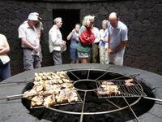
El Diablo Restaurant
The chefs at El Diablo use heat generated by an active volcano to cook the food.Using an exciting - and questionably safe - food preparation technique, the chefs at the El Diablo Restaurant on the island of Lanzarote have a one of a kind kitchen, a volcanic hole in the ground.
Building a restaurant on top of a massive heat source is not the easiest task. Architects Eduardo Caceres and Jesus Soto had to lay 9 layers of basalt rock in lieu of digging down to build a foundation. A giant grill is laid across the opening, where 6 feet below, the gentle giant is softly bubbling lava at 400 degrees Celsius, apparently the perfect temperature for volcanically grilled meats.
If the thought of trying to eat your salad as fire shoots in the air and lava spews out of the dining room deters you, fear not. This dormant volcano has been peacefully gurgling below the surface since it's last eruption in 1824. What could possibly go wrong?
Aside from the dramatic cooking methods, El Diablo also brags an amazing otherworldly panoramic view of Lanzarote’s Timanfaya National Park, a martian landscape of red sands and volcanic rock. The vista is framed by the ”Montañas del Fuego," or Fire Mountains, roughly 100 volcanos that sprung up on the island in the 18th century. May they continue to cook only the entree.
Read more about El Diablo Restaurant on Atlas Obscura...
Category: Commercial Curiosities, Bizarre Restaurants and Bars
Location:
Edited by: kellythewriter, Rachel, Dylan
Fri, 02 Mar 2012 00:09:00 -0600
Camera Obscura
Camera Obscura
Camera ObscuraAn offbeat angle on the ocean viewed through an antiquated lensLeave your driver's license at the office of the senior center in Santa Monica and in return you will receive a key to the camera obscura at the top of the stairs.
Inside a small room, you will find a large white disk in the center, and a wheel that allows you to steer the lens and mirror contained in the turret above, projecting an image onto the disk of whoever and whatever happens to be passing by outside.
Camera Obscura's are believed to be among the earliest optical inventions, the theory behind them known at least since Greek times. Academics believe camera obscura devices may have been used by renaissance painters such as Da Vinci to project images onto canvases to help them paint. In Victorian and Edwardian times they became a popular seaside attraction.
Such was the case with the Santa Monica Camera Obscura. After being gifted to the city in 1907, the camera spent almost 50 years documenting life on the Santa Monica beach. In 1955 the mechanism was installed in the nearby Senior Recreation Center. Many images of the popular beach community throughout the years are on display to compare to the current view.
A quick walk from the pier, the Camera Obscura that was once such a common beachside attraction is now a little known treat for those interested in photography, 19th century mechanics, or spying on oblivious beach-goers.Read more about Camera Obscura on Atlas Obscura...Category: Inspired Inventions, Optical OdditiesLocation: Edited by: Rachel, Dylan
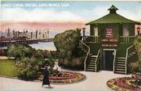
Camera Obscura
An offbeat angle on the ocean viewed through an antiquated lensLeave your driver's license at the office of the senior center in Santa Monica and in return you will receive a key to the camera obscura at the top of the stairs.
Inside a small room, you will find a large white disk in the center, and a wheel that allows you to steer the lens and mirror contained in the turret above, projecting an image onto the disk of whoever and whatever happens to be passing by outside.
Camera Obscura's are believed to be among the earliest optical inventions, the theory behind them known at least since Greek times. Academics believe camera obscura devices may have been used by renaissance painters such as Da Vinci to project images onto canvases to help them paint. In Victorian and Edwardian times they became a popular seaside attraction.
Such was the case with the Santa Monica Camera Obscura. After being gifted to the city in 1907, the camera spent almost 50 years documenting life on the Santa Monica beach. In 1955 the mechanism was installed in the nearby Senior Recreation Center. Many images of the popular beach community throughout the years are on display to compare to the current view.
A quick walk from the pier, the Camera Obscura that was once such a common beachside attraction is now a little known treat for those interested in photography, 19th century mechanics, or spying on oblivious beach-goers.
Read more about Camera Obscura on Atlas Obscura...
Category: Inspired Inventions, Optical Oddities
Location:
Edited by: Rachel, Dylan
Thu, 01 Mar 2012 00:14:00 -0600
Ni'ihau Incident
Ni'ihau Incident
Ni'ihau IncidentA Japanese pilot crash lands on Ni'ihau after Pearl Harbor attack and terrorizes locals for a week When Japan attacked Pearl Harbor on Dec. 7th, 1941, the island of Ni'ihau was inhabited by a mere 136 souls, most of which were native Hawaiians. Out of those who weren't, three happened to be of Japanese descent, two of which were born on Ni'ihau. Because of the island's small size and significant isolation, the Imperial Japanese Navy mistakenly characterized the area as uninhabited, and designated it as a place to crash land and/or rendezvous with a rescue sub after the onslaught.
Airman First Class Shigenori Nishikaichi's plane was damaged after taking part in the second wave of the attack, and as he had been instructed, crash landed on the deserted Ni'ihau. Much to his surprise he was approached by a Ni'ihau resident who had been standing 19 ft. away, and who while unaware of the attack on Pearl Harbor, knew enough about current events to relieve Nishikaichi of his weapon and his papers.
Unable to communicate with the pilot and confused about his presence, the Japanese-speaking residents were summoned. Yoshio Harada, who was Japanese but Hawaiian born, was brought in along with his wife Irene to find out why the pilot was there. After a terse conversation in which Nishikaichi informed the two of the Pearl Harbor attack, Harada chose to keep the info to himself, and asked if the pilot could be relocated to his house until someone from the main island came to fetch him.
The absence of electricity and telephones on the island delayed news of the fate of Pearl Harbor, but a radio transmission alerted the people of Ni'ihau to the gravity of the presence of their prisoner eventually, and Nishikaichi knew that his lax security among these gentle and welcoming people would soon come to an end. Employing the help of the Haradas as well as the only other Japanese citizen on the island, Ishimatsu Shintani, he overpowered the guards, retrieved his weapon, and took a 16 year-old girl as a hostage.
For the next several days, Nishikaichi and his converts terrorized the island in a mission to retrieve the pilot's papers, which Hawila Kaleohano, the man who had originally confiscated them, stubbornly refused to surrender. Women and children ran for caves and distant beaches as the men played an armed version of cat and mouse, Kaleohano hiding the papers with a relative and then setting out to get help as Nishikaichi frantically torched his plane and tore the island inside-out looking for his vital papers.
Finally, on December 13th, 6 days after the madness had begun, it abruptly ended. Harada and Nishikaichi, desperate to find the papers, took Ben Kanahele and his wife hostage and ordered them to find Kaleohano. Aware that Kaleohano had left the island, Ben Kanahele played along. Noticing the exhaustion of his captors, he watched and waited for the perfect opportunity to pounce. At the earliest distraction, Kanahele and his wife Ella sprung into action, and despite getting shot three times, he managed to overpower Nishikaichi long enough for Ella to smash his head in with a rock. Harada, upon realizing his new leader was dead and his treason would be exposed, Harada turned his shotgun on himself as Kanahele finished off the enemy pilot by slitting his throat.
The privately-owned island of Ni'ihau is still fairly isolated to this day, open primarily to residents, their invited guests, and military personnel, giving it the nickname “The Forbidden Isle”. Since 1987, it has allowed limited tourism and supervised excursions on it's shores. The remains of Nishikaichi's Zero can be viewed on permanent display at the Pacific Aviation Museum Pearl Harbor on Ford Island in Pearl Harbor.Read more about Ni'ihau Incident on Atlas Obscura...Category: Anomalous Islands, Crime and PunishmentLocation: Hawaii, USEdited by: Rachel
Ni'ihau Incident
A Japanese pilot crash lands on Ni'ihau after Pearl Harbor attack and terrorizes locals for a week When Japan attacked Pearl Harbor on Dec. 7th, 1941, the island of Ni'ihau was inhabited by a mere 136 souls, most of which were native Hawaiians. Out of those who weren't, three happened to be of Japanese descent, two of which were born on Ni'ihau. Because of the island's small size and significant isolation, the Imperial Japanese Navy mistakenly characterized the area as uninhabited, and designated it as a place to crash land and/or rendezvous with a rescue sub after the onslaught.
Airman First Class Shigenori Nishikaichi's plane was damaged after taking part in the second wave of the attack, and as he had been instructed, crash landed on the deserted Ni'ihau. Much to his surprise he was approached by a Ni'ihau resident who had been standing 19 ft. away, and who while unaware of the attack on Pearl Harbor, knew enough about current events to relieve Nishikaichi of his weapon and his papers.
Unable to communicate with the pilot and confused about his presence, the Japanese-speaking residents were summoned. Yoshio Harada, who was Japanese but Hawaiian born, was brought in along with his wife Irene to find out why the pilot was there. After a terse conversation in which Nishikaichi informed the two of the Pearl Harbor attack, Harada chose to keep the info to himself, and asked if the pilot could be relocated to his house until someone from the main island came to fetch him.
The absence of electricity and telephones on the island delayed news of the fate of Pearl Harbor, but a radio transmission alerted the people of Ni'ihau to the gravity of the presence of their prisoner eventually, and Nishikaichi knew that his lax security among these gentle and welcoming people would soon come to an end. Employing the help of the Haradas as well as the only other Japanese citizen on the island, Ishimatsu Shintani, he overpowered the guards, retrieved his weapon, and took a 16 year-old girl as a hostage.
For the next several days, Nishikaichi and his converts terrorized the island in a mission to retrieve the pilot's papers, which Hawila Kaleohano, the man who had originally confiscated them, stubbornly refused to surrender. Women and children ran for caves and distant beaches as the men played an armed version of cat and mouse, Kaleohano hiding the papers with a relative and then setting out to get help as Nishikaichi frantically torched his plane and tore the island inside-out looking for his vital papers.
Finally, on December 13th, 6 days after the madness had begun, it abruptly ended. Harada and Nishikaichi, desperate to find the papers, took Ben Kanahele and his wife hostage and ordered them to find Kaleohano. Aware that Kaleohano had left the island, Ben Kanahele played along. Noticing the exhaustion of his captors, he watched and waited for the perfect opportunity to pounce. At the earliest distraction, Kanahele and his wife Ella sprung into action, and despite getting shot three times, he managed to overpower Nishikaichi long enough for Ella to smash his head in with a rock. Harada, upon realizing his new leader was dead and his treason would be exposed, Harada turned his shotgun on himself as Kanahele finished off the enemy pilot by slitting his throat.
The privately-owned island of Ni'ihau is still fairly isolated to this day, open primarily to residents, their invited guests, and military personnel, giving it the nickname “The Forbidden Isle”. Since 1987, it has allowed limited tourism and supervised excursions on it's shores. The remains of Nishikaichi's Zero can be viewed on permanent display at the Pacific Aviation Museum Pearl Harbor on Ford Island in Pearl Harbor.
Read more about Ni'ihau Incident on Atlas Obscura...
Category: Anomalous Islands, Crime and Punishment
Location: Hawaii, US
Edited by: Rachel
Wed, 29 Feb 2012 18:00:00 -0600
The Senator, Bald Cypress
The Senator, Bald Cypress
The Senator, Bald Cypress3,500 year old tree was the second oldest in the United States, burned down by drug user who stated, "I can't believe I burned down a tree older than Jesus."Update: On 2/29/12, Seminole County police arrested a woman who confessed to causing the fire that destroyed the Senator. Sarah Barnes and a friend were smoking meth inside the tree, and using an open flame as a guide. After the fire broke out, Barnes took photos and video with her cell phone and later showed them to several people which led someone to tip off investigators. Apparently she left the fire burning, and the tree was engulfed days later, burning from the inside out. Though the park is still open, the tree is no longer standing. Original article below:
-----------------------------------------------------------------------------------------------------
Visiting one of the oldest living organisms in the world is actually quite easy. Thought to be the eighth oldest tree in the world, the Bald Cypress (Taxodium distichum) affectionately known as the “Senator,” stands in a small park located in Longwood, FL.
Its estimated age of 3,500 years makes it only slightly younger than the carefully guarded Great Basin Bristlecone Pine of California known as Methuselah. To get a good sense of how old this tree really is, one must keep in mind the “Senator” was alive not only during the time of Jesus, but for 1500 years before that when the Greeks destroyed Troy, the Olmecs were powerful in Mexico, Solomon succeeded King David, and Stonehenge was being constructed. Unlike the secret location of the ancient pine, this cypress is very accessible to the public.
The “Senator” is the largest tree east of the Mississippi and currently stands at 118 feet tall with a circumference of 35 feet. A hurricane in 1925 damaged the top of the tree, shortening it from its original height of 165 feet.he tremendous size of the tree made it useful to both Indians and early settlers as a marker when traveling through the area. Tourists have frequented the area to view the tree since the 1800’s and the land on which it resides was donated to Seminole County by the late Senator M.O. Overstreet to ensure the preservation of the tree. It was in memory of Senator Overstreet that the cypress received its present name. Following the donation in 1927, a ceremony hosted by President Calvin Coolidge, officially opened the property to the public in 1929.
Surrounded today by the Spring Hammock Preserve, the “Senator” shares space with a companion tree known as “Lady Liberty.” This companion Bald Cypress is a comparatively youthful 2,000 years old and stands 89 feet in height with a circumference of 32 feet.Read more about The Senator, Bald Cypress on Atlas Obscura...Category: Horticultural MarvelsLocation: Edited by: ronin, Dylan, Gumbotronic, Rachel
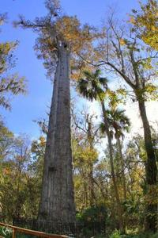
The Senator, Bald Cypress
3,500 year old tree was the second oldest in the United States, burned down by drug user who stated, "I can't believe I burned down a tree older than Jesus."Update: On 2/29/12, Seminole County police arrested a woman who confessed to causing the fire that destroyed the Senator. Sarah Barnes and a friend were smoking meth inside the tree, and using an open flame as a guide. After the fire broke out, Barnes took photos and video with her cell phone and later showed them to several people which led someone to tip off investigators. Apparently she left the fire burning, and the tree was engulfed days later, burning from the inside out. Though the park is still open, the tree is no longer standing. Original article below:
-----------------------------------------------------------------------------------------------------
Visiting one of the oldest living organisms in the world is actually quite easy. Thought to be the eighth oldest tree in the world, the Bald Cypress (Taxodium distichum) affectionately known as the “Senator,” stands in a small park located in Longwood, FL.
Its estimated age of 3,500 years makes it only slightly younger than the carefully guarded Great Basin Bristlecone Pine of California known as Methuselah. To get a good sense of how old this tree really is, one must keep in mind the “Senator” was alive not only during the time of Jesus, but for 1500 years before that when the Greeks destroyed Troy, the Olmecs were powerful in Mexico, Solomon succeeded King David, and Stonehenge was being constructed. Unlike the secret location of the ancient pine, this cypress is very accessible to the public.
The “Senator” is the largest tree east of the Mississippi and currently stands at 118 feet tall with a circumference of 35 feet. A hurricane in 1925 damaged the top of the tree, shortening it from its original height of 165 feet.
he tremendous size of the tree made it useful to both Indians and early settlers as a marker when traveling through the area. Tourists have frequented the area to view the tree since the 1800’s and the land on which it resides was donated to Seminole County by the late Senator M.O. Overstreet to ensure the preservation of the tree. It was in memory of Senator Overstreet that the cypress received its present name. Following the donation in 1927, a ceremony hosted by President Calvin Coolidge, officially opened the property to the public in 1929.
Surrounded today by the Spring Hammock Preserve, the “Senator” shares space with a companion tree known as “Lady Liberty.” This companion Bald Cypress is a comparatively youthful 2,000 years old and stands 89 feet in height with a circumference of 32 feet.
Read more about The Senator, Bald Cypress on Atlas Obscura...
Category: Horticultural Marvels
Location:
Edited by: ronin, Dylan, Gumbotronic, Rachel
Tue, 28 Feb 2012 22:00:00 -0600
The Hat Museum
The Hat Museum
The Hat Museum"We've been bonkers for hats even longer than you have!"The quirky Ladd-Reingold House has been through an array of interesting circumstance. The house was built in the early 1900's in the west coast's first attempt at city planning, called Ladd's Addition. Rebecca Reingold moved to Portland from Russia and bought the house while it was still new. The last Reingold left the house over 60 years ago, but the eccentric family's legacy remains.
Besides the strange design of the house which includes pocket doors, a secret hiding place, doors hung backwards and a dumbwaiter, there are more obvious eccentricities, like the giant-sized mermaid painted on the dining room ceiling. Not to be outdone by the house, Rebecca Reingold was a character herself, and was quite fond of collecting hats, close to 900 of them in fact, all of which remained in the house long after she was gone.
After being abandoned for about 5 years in the 70's, a new owner with a very coincidental passion for headwear bought what she initially called "The Monster House," unknowingly inheriting a hat collection that rivaled her own. After some remodeling and moving in her own fine collection of dice, mermaids, hands, and of course hats, Alyce Cornyn-Selby turned the house into a museum to share her treasures.
Five hat categories reside in the 1910 Craftsman-style home-vintage, men's, novelty, retro, and international. Also featured in the museum is movie memorabilia, some rare designer hats, and for those that just aren't that easily impressed, a Thanksgiving table hat that sings.Read more about The Hat Museum on Atlas Obscura...Category: Museums and Collections, Unique Collections, Eccentric HomesLocation: Edited by: rebeccaclara, Rachel, Dylan
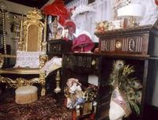
The Hat Museum
"We've been bonkers for hats even longer than you have!"The quirky Ladd-Reingold House has been through an array of interesting circumstance. The house was built in the early 1900's in the west coast's first attempt at city planning, called Ladd's Addition. Rebecca Reingold moved to Portland from Russia and bought the house while it was still new. The last Reingold left the house over 60 years ago, but the eccentric family's legacy remains.
Besides the strange design of the house which includes pocket doors, a secret hiding place, doors hung backwards and a dumbwaiter, there are more obvious eccentricities, like the giant-sized mermaid painted on the dining room ceiling. Not to be outdone by the house, Rebecca Reingold was a character herself, and was quite fond of collecting hats, close to 900 of them in fact, all of which remained in the house long after she was gone.
After being abandoned for about 5 years in the 70's, a new owner with a very coincidental passion for headwear bought what she initially called "The Monster House," unknowingly inheriting a hat collection that rivaled her own. After some remodeling and moving in her own fine collection of dice, mermaids, hands, and of course hats, Alyce Cornyn-Selby turned the house into a museum to share her treasures.
Five hat categories reside in the 1910 Craftsman-style home-vintage, men's, novelty, retro, and international. Also featured in the museum is movie memorabilia, some rare designer hats, and for those that just aren't that easily impressed, a Thanksgiving table hat that sings.
Read more about The Hat Museum on Atlas Obscura...
Category: Museums and Collections, Unique Collections, Eccentric Homes
Location:
Edited by: rebeccaclara, Rachel, Dylan
Tue, 28 Feb 2012 00:56:00 -0600
Telephone Pole Farm
Telephone Pole Farm
Telephone Pole FarmA farm in New Jersey grew a most unusual crop for AT&T's testing purposesWhile the word "farm" might be a stretch, this former AT&T testing site in Chester, New Jersey definitely gives the illusion of farming with hundreds of tree trunks shaped into poles "planted" into the ground in tidy rows.T&T created the farm in the 1920's, varying arboreal species and different protectant methods, then allegedly subjected their test subjects to flocks of woodpeckers, hordes of pocket gophers, and the most unforgiving enemy of all, time. The poles are carefully marked with metal data tags, and the site doubled as a training ground as a climbing school for technicians to practice.
The farm is now part of Highlands Ridge Park, a popular spot for families and hikers and a great place to spot local wildlife.Read more about Telephone Pole Farm on Atlas Obscura...Category: Commercial Curiosities, Horticultural MarvelsLocation: Edited by: Rachel

Telephone Pole Farm
A farm in New Jersey grew a most unusual crop for AT&T's testing purposesWhile the word "farm" might be a stretch, this former AT&T testing site in Chester, New Jersey definitely gives the illusion of farming with hundreds of tree trunks shaped into poles "planted" into the ground in tidy rows.
T&T created the farm in the 1920's, varying arboreal species and different protectant methods, then allegedly subjected their test subjects to flocks of woodpeckers, hordes of pocket gophers, and the most unforgiving enemy of all, time. The poles are carefully marked with metal data tags, and the site doubled as a training ground as a climbing school for technicians to practice.
The farm is now part of Highlands Ridge Park, a popular spot for families and hikers and a great place to spot local wildlife.
Read more about Telephone Pole Farm on Atlas Obscura...
Category: Commercial Curiosities, Horticultural Marvels
Location:
Edited by: Rachel
Tue, 28 Feb 2012 00:05:00 -0600
Vashon Island Bike Tree
Vashon Island Bike Tree
Vashon Island Bike TreeA bike being "eaten" by a tree is the real Vashon legend behind popular children's book, "Red Ranger Came Calling"A rusted, dated bicycle is suspended inside the trunk of a tree, roughly 7 ft. off of the ground. It's as if the towering giant had tried to absorb or "eat" the two-wheeler and quit, defeated halfway through the process, leaving the bike carcass suspended within the living wood forever.
There are many stories and just as many questions about how the bike ended up in its awkward predicament. A boy tied it to a tree before going off to war, never to return. A child chained it there and got busy growing up, so the tree took it into an embrace. Artist, cartoonist and author Berkeley Breathed, who grew up on Vashon Island, wrote his version of what happened in a children's book called "Red Ranger Came Calling", weaving it into an elaborate Christmas story.
While many are enchanted with the tree and its strange captive, some think it's a hoax. Many have speculated that there is no way the tree could have "picked up" the bicycle if it had been left leaning against it on the ground, as trees do not, by nature, grow up from the trunk, but from the top. The less cynical have pointed out that since the bike seems to be from the 1910s, the tree could have easily been a sapling, and a forked branch may have been weaved between parts of the bike and lifted it up over the decades.
Either way, the bike remains, suspended inside the knotted wood, and is a popular stop for hikers and bike lovers alike.Read more about Vashon Island Bike Tree on Atlas Obscura...Category: Natural Wonders, Extraordinary FloraLocation: Edited by: Rachel
Vashon Island Bike Tree
A bike being "eaten" by a tree is the real Vashon legend behind popular children's book, "Red Ranger Came Calling"A rusted, dated bicycle is suspended inside the trunk of a tree, roughly 7 ft. off of the ground. It's as if the towering giant had tried to absorb or "eat" the two-wheeler and quit, defeated halfway through the process, leaving the bike carcass suspended within the living wood forever.
There are many stories and just as many questions about how the bike ended up in its awkward predicament. A boy tied it to a tree before going off to war, never to return. A child chained it there and got busy growing up, so the tree took it into an embrace. Artist, cartoonist and author Berkeley Breathed, who grew up on Vashon Island, wrote his version of what happened in a children's book called "Red Ranger Came Calling", weaving it into an elaborate Christmas story.
While many are enchanted with the tree and its strange captive, some think it's a hoax. Many have speculated that there is no way the tree could have "picked up" the bicycle if it had been left leaning against it on the ground, as trees do not, by nature, grow up from the trunk, but from the top. The less cynical have pointed out that since the bike seems to be from the 1910s, the tree could have easily been a sapling, and a forked branch may have been weaved between parts of the bike and lifted it up over the decades.
Either way, the bike remains, suspended inside the knotted wood, and is a popular stop for hikers and bike lovers alike.
Read more about Vashon Island Bike Tree on Atlas Obscura...
Category: Natural Wonders, Extraordinary Flora
Location:
Edited by: Rachel
Mon, 27 Feb 2012 10:50:00 -0600
The Tomb of Nguyen Emperor Khai Dinh
The Tomb of Nguyen Emperor Khai Dinh
The Tomb of Nguyen Emperor Khai DinhAn extravagant monument to an extravagantly unpopular Emperor.Following in the footsteps of most of his Nguyen predecessors, Emperor Khai Dinh planned ahead of time for his final resting place. When he kicked the bucket in 1925, Khai Dinh was laid to rest in his lavish tomb, complete with a golden effigy of himself in the inner chamber.
What sets Khai Dinh's tomb apart from the others around Hue is its architectural fusion of Chinese, Vietnamese, and European Gothic elements. There are fierce dragons guarding the steps, stone elephants and warriors outside, and finally, massive wrought iron gates at the entrance. The inside of the tomb has some of the Emperor's personal effects and gifts, as well as incredibly intricate patterns of ceramic and glass decorating the walls.
The exterior iron and stone are juxtaposed by a truly magnificent interior reflective of a prodigious Emperor. Ironically, the tomb is less a monument to the Emperor himself but more a monument to his excessive wealth and disconnect from the ordinary man. Khai Dinh was reputed to be a pawn of the colonial French -- so much so, he was mocked as a salaried employee of the French government -- and he taxed his people heavily to finance the building of the elaborate edifice.Read more about The Tomb of Nguyen Emperor Khai Dinh on Atlas Obscura...Category: Memento Mori, Catacombs, Crypts, & CemeteriesLocation: Hue, VietnamEdited by: likethefox, Rachel
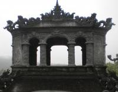
The Tomb of Nguyen Emperor Khai Dinh
An extravagant monument to an extravagantly unpopular Emperor.Following in the footsteps of most of his Nguyen predecessors, Emperor Khai Dinh planned ahead of time for his final resting place. When he kicked the bucket in 1925, Khai Dinh was laid to rest in his lavish tomb, complete with a golden effigy of himself in the inner chamber.
What sets Khai Dinh's tomb apart from the others around Hue is its architectural fusion of Chinese, Vietnamese, and European Gothic elements. There are fierce dragons guarding the steps, stone elephants and warriors outside, and finally, massive wrought iron gates at the entrance. The inside of the tomb has some of the Emperor's personal effects and gifts, as well as incredibly intricate patterns of ceramic and glass decorating the walls.
The exterior iron and stone are juxtaposed by a truly magnificent interior reflective of a prodigious Emperor. Ironically, the tomb is less a monument to the Emperor himself but more a monument to his excessive wealth and disconnect from the ordinary man. Khai Dinh was reputed to be a pawn of the colonial French -- so much so, he was mocked as a salaried employee of the French government -- and he taxed his people heavily to finance the building of the elaborate edifice.
Read more about The Tomb of Nguyen Emperor Khai Dinh on Atlas Obscura...
Category: Memento Mori, Catacombs, Crypts, & Cemeteries
Location: Hue, Vietnam
Edited by: likethefox, Rachel
Sun, 26 Feb 2012 23:12:00 -0600
Hachikō
Hachikō
HachikōAfter a profound show of devotion for his master, a dog becomes the symbol of loyalty for an entire nationIf there was one thing that Professor Ueno could count on, it was the sight of his loyal companion patiently waiting for him as he stepped off the train every evening after his commute. Every day for a year, the golden Akita, dubbed Hachikō, would accompany his owner to Shibuya Station, and every day he would be waiting for the professor to return for the walk home.
One sad day, the train came, but Professor Ueno didn't appear. Hachikō returned the next day, and the next, but there was no way to tell the poor dog what had become of his master. The Professor had died of a stroke and would never step off of the train to greet him again.
For nine years, Hachikō waited for the train every day, only to leave alone. Commuters and station employees would feed him treats and keep him company, and an old student of the professor retraced the dog's genealogy, declaring Hachikō as one of only 30 purebred Akitas remaining. He became quite the celebrity over the years, inspiring books, films, art and poetry, and was present at the unveiling of his own bronze statue, a version of which still remains at Shibuya Station as a popular meeting spot.
When Hachikō died of a combination of cancer and worms in the streets of Shibuya in 1935, his remains were stuffed and mounted, and can now be visited at the National Science Museum of Japan in Ueno, Tokyo.Read more about Hachikō on Atlas Obscura...Category: Fascinating Fauna, Hunting and Taxidermy, Strange StatuesLocation: Tokyo, JapanEdited by: Rachel
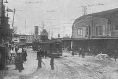
Hachikō
After a profound show of devotion for his master, a dog becomes the symbol of loyalty for an entire nationIf there was one thing that Professor Ueno could count on, it was the sight of his loyal companion patiently waiting for him as he stepped off the train every evening after his commute. Every day for a year, the golden Akita, dubbed Hachikō, would accompany his owner to Shibuya Station, and every day he would be waiting for the professor to return for the walk home.
One sad day, the train came, but Professor Ueno didn't appear. Hachikō returned the next day, and the next, but there was no way to tell the poor dog what had become of his master. The Professor had died of a stroke and would never step off of the train to greet him again.
For nine years, Hachikō waited for the train every day, only to leave alone. Commuters and station employees would feed him treats and keep him company, and an old student of the professor retraced the dog's genealogy, declaring Hachikō as one of only 30 purebred Akitas remaining. He became quite the celebrity over the years, inspiring books, films, art and poetry, and was present at the unveiling of his own bronze statue, a version of which still remains at Shibuya Station as a popular meeting spot.
When Hachikō died of a combination of cancer and worms in the streets of Shibuya in 1935, his remains were stuffed and mounted, and can now be visited at the National Science Museum of Japan in Ueno, Tokyo.
Read more about Hachikō on Atlas Obscura...
Category: Fascinating Fauna, Hunting and Taxidermy, Strange Statues
Location: Tokyo, Japan
Edited by: Rachel
Thu, 23 Feb 2012 22:35:00 -0600
Seodaemun Prison
Seodaemun Prison
Seodaemun PrisonA chilling monument to Korean patriots who resisted the Japanese occupation.An anachronistic brick wall stands out amongst a rare park in one of Seoul's quieter neighborhoods. Behind the nondescript wall, a guard tower looms, and below it, a grim gate. This gate marks the entrance to Seodaemun Prison, a relic from a forgotten era in Korea's past seeped in subjugation and humiliation.
Seodaemun Prison was opened in 1908 by occupying Japanese forces in an attempt to impose order on the newly acquired territory. Prior, the country had a virtually non-existent penal system, and the introduction of Seodaemun Prison was a precursor to full out occupation.
Seodaemun became a bastion for the Korean independence movement from its opening in 1908 until the liberation of the country in 1945. As the Japanese arrested more patriots, the prison's notoriety increased and it eventually became a symbol of perseverance. Many patriots died in custody, were tortured to death, or were executed within the prison's walls. The macabre execution hall still stands, housing the prison's gallows (with a tunnel nearby to dispose of corpses).
Throughout the preserved prison-turned-museum, you can see chillingly recreated torture chambers, jail cells, isolation cells, and more. The women's section has been preserved, basement cells in which no privacy was afforded. Some of the torture chambers have frighteningly realistic mannequins and effigies to famous Korean patriots who died within the prison.
Designated as a historic site in 1988 and renovated in 1995, Seodaemun is an interesting place to visit for those who want a tactile experience of the Japanese occupation and the horrors entailed. It stands out amongst Seoul's other historic sites as a monument to those who helped shape the modern Korean nation.Read more about Seodaemun Prison on Atlas Obscura...Category: Crime and Punishment, Catacombs, Crypts, & CemeteriesLocation: Seoul, South KoreaEdited by: likethefox, Rachel, Dylan
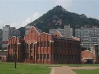
Seodaemun Prison
A chilling monument to Korean patriots who resisted the Japanese occupation.An anachronistic brick wall stands out amongst a rare park in one of Seoul's quieter neighborhoods. Behind the nondescript wall, a guard tower looms, and below it, a grim gate. This gate marks the entrance to Seodaemun Prison, a relic from a forgotten era in Korea's past seeped in subjugation and humiliation.
Seodaemun Prison was opened in 1908 by occupying Japanese forces in an attempt to impose order on the newly acquired territory. Prior, the country had a virtually non-existent penal system, and the introduction of Seodaemun Prison was a precursor to full out occupation.
Seodaemun became a bastion for the Korean independence movement from its opening in 1908 until the liberation of the country in 1945. As the Japanese arrested more patriots, the prison's notoriety increased and it eventually became a symbol of perseverance. Many patriots died in custody, were tortured to death, or were executed within the prison's walls. The macabre execution hall still stands, housing the prison's gallows (with a tunnel nearby to dispose of corpses).
Throughout the preserved prison-turned-museum, you can see chillingly recreated torture chambers, jail cells, isolation cells, and more. The women's section has been preserved, basement cells in which no privacy was afforded. Some of the torture chambers have frighteningly realistic mannequins and effigies to famous Korean patriots who died within the prison.
Designated as a historic site in 1988 and renovated in 1995, Seodaemun is an interesting place to visit for those who want a tactile experience of the Japanese occupation and the horrors entailed. It stands out amongst Seoul's other historic sites as a monument to those who helped shape the modern Korean nation.
Read more about Seodaemun Prison on Atlas Obscura...
Category: Crime and Punishment, Catacombs, Crypts, & Cemeteries
Location: Seoul, South Korea
Edited by: likethefox, Rachel, Dylan
Thu, 23 Feb 2012 00:20:00 -0600
Birthplace of Isadora Duncan
Birthplace of Isadora Duncan
Birthplace of Isadora DuncanHome of modern dancer famously strangled by her own scarfIsadora was known as a mother of modern dance, and defied the current social and dance conventions. She favored barefeet, flowing clothing, loose hair, and free form movements. Her communist leanings and unconventional - some might say scandalous-- love life made her a controversial figure. She has since appeared in pop culture, including a 1968 film in which she was portrayed by Vanessa Redgrave.
The plaque at 501 Taylor Street on Lower Nob Hill, near the Theater District in San Francisco commemorates Isadora Duncan's place of birth, but she is also famous for the circumstances of her death. While riding in a convertible in Nice, France in 1927, her long scarf, a signature accessory she was known for, became caught in the wheel of the car. She was ripped out of the vehicle by her neck and dragged several yards before the chauffeur was able to stop. Her death was officially caused by strangulation, however it's said she was almost decapitated by the fashion statement she just couldn't live without.
Coincidentally, years earlier her children were tragically and avoidably killed in a motor vehicle. After being seated in a car on a hill, the driverless vehicle began to roll, and plunged over a bridge and into the Seine, where the children perished along with a nanny that was accompanying them.Read more about Birthplace of Isadora Duncan on Atlas Obscura...Category: Wondrous Performances, Eccentric HomesLocation: Edited by: rebeccaclara, Rachel, sfpaperboy
Birthplace of Isadora Duncan
Home of modern dancer famously strangled by her own scarfIsadora was known as a mother of modern dance, and defied the current social and dance conventions. She favored barefeet, flowing clothing, loose hair, and free form movements. Her communist leanings and unconventional - some might say scandalous-- love life made her a controversial figure. She has since appeared in pop culture, including a 1968 film in which she was portrayed by Vanessa Redgrave.
The plaque at 501 Taylor Street on Lower Nob Hill, near the Theater District in San Francisco commemorates Isadora Duncan's place of birth, but she is also famous for the circumstances of her death. While riding in a convertible in Nice, France in 1927, her long scarf, a signature accessory she was known for, became caught in the wheel of the car. She was ripped out of the vehicle by her neck and dragged several yards before the chauffeur was able to stop. Her death was officially caused by strangulation, however it's said she was almost decapitated by the fashion statement she just couldn't live without.
Coincidentally, years earlier her children were tragically and avoidably killed in a motor vehicle. After being seated in a car on a hill, the driverless vehicle began to roll, and plunged over a bridge and into the Seine, where the children perished along with a nanny that was accompanying them.
Read more about Birthplace of Isadora Duncan on Atlas Obscura...
Category: Wondrous Performances, Eccentric Homes
Location:
Edited by: rebeccaclara, Rachel, sfpaperboy
Wed, 22 Feb 2012 23:54:00 -0600
Lemp Mansion
Lemp Mansion
Lemp MansionAn historic house in St. Louis is reported to be haunted by a series of suicides committed by family members involved in a successful brewery.The story of the Lemp Mansion runs hand-in-hand with the story of German immigration and beer brewing in St. Louis. Johann "Adam" Lemp, a German immigrant, moved to St. Louis in 1838 and set up a grocery store in South St. Louis. By 1840 he was focusing primarily on brewing and selling beer. He formed Western Brewery, one of the first breweries to produce German Lager in the United States, at 37 South Second Street (where the south leg of the Arch now stands).
Adam's son, William J. Lemp, took over Western Brewery after serving as Orderly Sargeant for the Union in the American Civil War. Under William, the brewery grew to be the largest in St. Louis and the largest outside of New York with a single owner.
William "Billy" J. Lemp Jr., William Sr.'s first son, followed the same educational path as his father, however it was William Sr.'s fourth son, Frederick, born in 1873, whom William Sr. hoped to groom to run the company. In 1876, William and his wife, Julia, moved into the Lemp Mansion (built in 1868). William changed the company to William J. Lemp brewing company in 1892 with his son William Jr. as Vice-President and his son Louis as Superintendent. It was now a family affair.
Unknown to the Lemp family, Frederick had significant health problems, and in 1901 Frederick died of heart failure. William Sr. became despondent and slowly deteriorated mentally and psychologically until he committed suicide by shotgun on February 13, 1904.
Billy took over after his father's death. His wife filed for divorce in 1908 charging Billy with desertion, cruel treatment, and other indignities. Billy was only granted visitation rights for their only son, William III. The company began to slide after prohibition, eventually shutting down and being auctioned for a minuscule fraction of its original worth. On December 29, 1922, Billy Lemp shot himself in his office. Today that office is the dining room of the mansion.
William Sr.'s youngest child, Elsa Lemp Wright, married Thomas Wright in 1910 and filed for divorce in 1919. They reconciled and were remarried in 1920, but she shot herself while in bed on March 20.
Charles Lemp, William Sr.'s third son, moved into the mansion in 1929. On April, 1941, Charles Lemp sent a letter to a south St. Louis funeral home requesting that in case of his death, his remains should be taken by ambulance to the Missouri Crematory. His body should not be bathed, clothed, or changed. His ashes should be put into a wicker box and buried on his farm. There were to be no funeral held or a notice put in the papers. On May 10, 1949 he shot his dog, then himself in the head, leaving the following note: "St. Louis Mo/May 9, 1949, In case I am found dead blame it on no one but me. Ch. A. Lemp".
That was the only suicide note in the family's history.
Edwin Lemp, the only remaining child of William Sr. (Louis died of natural causes in 1931), never moved back into the mansion. Edwin died in 1970 at age 90. His final order to his caretaker was to destroy his art collection and family heirlooms.
Today, the Lemp Mansion has been made into a restaurant and inn by the Pointer family and offers tours (historical and haunted), murder mystery dinner theatre, and Halloween parties.Read more about Lemp Mansion on Atlas Obscura...Category: Intriguing Environs, Eccentric HomesLocation: Edited by: salongmore, Rachel
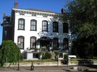
Lemp Mansion
An historic house in St. Louis is reported to be haunted by a series of suicides committed by family members involved in a successful brewery.The story of the Lemp Mansion runs hand-in-hand with the story of German immigration and beer brewing in St. Louis. Johann "Adam" Lemp, a German immigrant, moved to St. Louis in 1838 and set up a grocery store in South St. Louis. By 1840 he was focusing primarily on brewing and selling beer. He formed Western Brewery, one of the first breweries to produce German Lager in the United States, at 37 South Second Street (where the south leg of the Arch now stands).
Adam's son, William J. Lemp, took over Western Brewery after serving as Orderly Sargeant for the Union in the American Civil War. Under William, the brewery grew to be the largest in St. Louis and the largest outside of New York with a single owner.
William "Billy" J. Lemp Jr., William Sr.'s first son, followed the same educational path as his father, however it was William Sr.'s fourth son, Frederick, born in 1873, whom William Sr. hoped to groom to run the company. In 1876, William and his wife, Julia, moved into the Lemp Mansion (built in 1868). William changed the company to William J. Lemp brewing company in 1892 with his son William Jr. as Vice-President and his son Louis as Superintendent. It was now a family affair.
Unknown to the Lemp family, Frederick had significant health problems, and in 1901 Frederick died of heart failure. William Sr. became despondent and slowly deteriorated mentally and psychologically until he committed suicide by shotgun on February 13, 1904.
Billy took over after his father's death. His wife filed for divorce in 1908 charging Billy with desertion, cruel treatment, and other indignities. Billy was only granted visitation rights for their only son, William III. The company began to slide after prohibition, eventually shutting down and being auctioned for a minuscule fraction of its original worth. On December 29, 1922, Billy Lemp shot himself in his office. Today that office is the dining room of the mansion.
William Sr.'s youngest child, Elsa Lemp Wright, married Thomas Wright in 1910 and filed for divorce in 1919. They reconciled and were remarried in 1920, but she shot herself while in bed on March 20.
Charles Lemp, William Sr.'s third son, moved into the mansion in 1929. On April, 1941, Charles Lemp sent a letter to a south St. Louis funeral home requesting that in case of his death, his remains should be taken by ambulance to the Missouri Crematory. His body should not be bathed, clothed, or changed. His ashes should be put into a wicker box and buried on his farm. There were to be no funeral held or a notice put in the papers. On May 10, 1949 he shot his dog, then himself in the head, leaving the following note: "St. Louis Mo/May 9, 1949, In case I am found dead blame it on no one but me. Ch. A. Lemp".
That was the only suicide note in the family's history.
Edwin Lemp, the only remaining child of William Sr. (Louis died of natural causes in 1931), never moved back into the mansion. Edwin died in 1970 at age 90. His final order to his caretaker was to destroy his art collection and family heirlooms.
Today, the Lemp Mansion has been made into a restaurant and inn by the Pointer family and offers tours (historical and haunted), murder mystery dinner theatre, and Halloween parties.
Read more about Lemp Mansion on Atlas Obscura...
Category: Intriguing Environs, Eccentric Homes
Location:
Edited by: salongmore, Rachel
Wed, 22 Feb 2012 00:22:00 -0600
Arctic Siberian Campion Plant Revived
Arctic Siberian Campion Plant Revived
Arctic Siberian Campion Plant RevivedRussian researchers who have been excavating ancient squirrel burrows may have brought a 32,000 plant back to lifeOn the banks of the lower Kolyma River in the tundra of northeastern Siberia, an area that during the last ice age was the stomping grounds of mammoth and woolly rhinoceroses, there lived a vast community of tundra squirrels. These ancient squirrels, not unlike the creatures of today, would stockpile seeds in burrows to keep themselves alive through the increasingly unforgiving winters. Not too long after these particular burrows were created, they were covered up under 125 ft. of sediment by the brutal wind sweeping the earth, soon to be frozen at minus 7 degrees Celsius for 32,000 years.
Fast-forward to a few years ago, when Russian researchers found the fruit of a narrow-leaf campion -- a small, white arctic flower, within the burrows. According to the team, this fruit was exposed to just the right conditions to preserve cells that would facilitate awakening the plant from it's ancient slumber. While many are still skeptical, a firm radiocarbon date seems to back the claim.
If what the Russians say is true, then this dainty plant will weigh in as the oldest plant by quite a bit to have arisen from it's ancient tissue using its old DNA. The seeds attached to the placenta that was used to propagate the plants was allegedly carbon dated at 31,800 years old. If this finding is correct, scientists will have the ability to “study evolution in real-time” by comparing the specimens with the current living versions of the campion plant, as well as possibly propagating other species also found in the burrows, possibly bringing extinct specimens back from the dead.
The ancient campion specimen is currently being housed at the Russian Academy of Sciences research center at Pushchino, near Moscow.Read more about Arctic Siberian Campion Plant Revived on Atlas Obscura...Category: Natural Wonders, Extraordinary FloraLocation: Moscow, RussiaEdited by: Rachel, Seth Teicher
Arctic Siberian Campion Plant Revived
Russian researchers who have been excavating ancient squirrel burrows may have brought a 32,000 plant back to lifeOn the banks of the lower Kolyma River in the tundra of northeastern Siberia, an area that during the last ice age was the stomping grounds of mammoth and woolly rhinoceroses, there lived a vast community of tundra squirrels. These ancient squirrels, not unlike the creatures of today, would stockpile seeds in burrows to keep themselves alive through the increasingly unforgiving winters. Not too long after these particular burrows were created, they were covered up under 125 ft. of sediment by the brutal wind sweeping the earth, soon to be frozen at minus 7 degrees Celsius for 32,000 years.
Fast-forward to a few years ago, when Russian researchers found the fruit of a narrow-leaf campion -- a small, white arctic flower, within the burrows. According to the team, this fruit was exposed to just the right conditions to preserve cells that would facilitate awakening the plant from it's ancient slumber. While many are still skeptical, a firm radiocarbon date seems to back the claim.
If what the Russians say is true, then this dainty plant will weigh in as the oldest plant by quite a bit to have arisen from it's ancient tissue using its old DNA. The seeds attached to the placenta that was used to propagate the plants was allegedly carbon dated at 31,800 years old. If this finding is correct, scientists will have the ability to “study evolution in real-time” by comparing the specimens with the current living versions of the campion plant, as well as possibly propagating other species also found in the burrows, possibly bringing extinct specimens back from the dead.
The ancient campion specimen is currently being housed at the Russian Academy of Sciences research center at Pushchino, near Moscow.
Read more about Arctic Siberian Campion Plant Revived on Atlas Obscura...
Category: Natural Wonders, Extraordinary Flora
Location: Moscow, Russia
Edited by: Rachel, Seth Teicher
Tue, 21 Feb 2012 11:03:00 -0600
The Home Alone House
The Home Alone House
The Home Alone HouseRecognized the world over as the home of the McCallister's in the 1990 movie Home Alone, now currently for sale for $2.4 millionFor those who grew up in the 90s, Home Alone is a sort of cultural touchstone. One of the most iconic places in the film was Kevin McCallister's (Macauley Culkin) home, a gorgeous mansion located in the Chicago suburb of Winnetka.
Built in the 1920s, the building is comprised of red brick and was built in the colonial Georgian style. As one enters the house, the infamous staircase welcomes guests, while the legendary living room seems to call out for the addition of cardboard cutouts of Michael Jordan . Remember that attic that Kevin slept in? In real life the attic is actually an attic bedroom with two grand suites and numerous nooks and crannies for storage.
The house is being sold for $2.4 million, booby traps cost extra.Read more about The Home Alone House on Atlas Obscura...Category: Architectural Oddities, Eccentric HomesLocation: Edited by: TrevorShawnElia, Dylan
The Home Alone House
Recognized the world over as the home of the McCallister's in the 1990 movie Home Alone, now currently for sale for $2.4 millionFor those who grew up in the 90s, Home Alone is a sort of cultural touchstone. One of the most iconic places in the film was Kevin McCallister's (Macauley Culkin) home, a gorgeous mansion located in the Chicago suburb of Winnetka.
Built in the 1920s, the building is comprised of red brick and was built in the colonial Georgian style. As one enters the house, the infamous staircase welcomes guests, while the legendary living room seems to call out for the addition of cardboard cutouts of Michael Jordan . Remember that attic that Kevin slept in? In real life the attic is actually an attic bedroom with two grand suites and numerous nooks and crannies for storage.
The house is being sold for $2.4 million, booby traps cost extra.
Read more about The Home Alone House on Atlas Obscura...
Category: Architectural Oddities, Eccentric Homes
Location:
Edited by: TrevorShawnElia, Dylan
Tue, 21 Feb 2012 00:01:00 -0600
Shwenandaw Kyaung Temple
Shwenandaw Kyaung Temple
Shwenandaw Kyaung TempleA grand example of 19th century Burmese teak architecture, and the most significant of Mandalay's historic buildings. The Shwenandaw Kyaung Temple, or Shwe-Kyaung-pyi as it is known to the Burmese, is the most significant of Mandalay's historic buildings, due to the fact that it is the sole remaining structure of the former wooden Royal Palace that was built by King Mindon in the mid-19th century.
It was originally part of the royal palace complex in Amarapura, but was subsequently moved to Mandalay, where it became known as Mya Nan San Kyaw. Following its move, it became the northern section of the Glass Palace and also part of the king's royal apartments. It would also be the final home and resting place of King Mindon, who died in this structure in 1878.
King Mindon's son Thibaw, who succeeded his father following his death, often used the building as meditation grounds, but became convinced that his father's spirit still haunted the grounds, so he immediately ordered the building to be dismantled and removed from the Royal City.
Over the course of the next 5 years following its dismantling, the building was reconstructed as a monastery and dedicated as a work of merit to the memory of King Mindon.
During the latter stages of World War II, the rest of the old Royal Palace within the old Royal City burned as a result of allied bombing of the Japanese encamped in the old Royal Palace. Due to King Thibaw's superstition and relocating of the building, he had preserved a significant remnant of the Royal Palace.Read more about Shwenandaw Kyaung Temple on Atlas Obscura...Category: Cultures and Civilizations , Architectural Oddities, Curious Places of WorshipLocation: Mandalay, MyanmarEdited by: TrevorShawnElia, Rachel
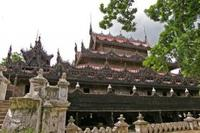
Shwenandaw Kyaung Temple
A grand example of 19th century Burmese teak architecture, and the most significant of Mandalay's historic buildings. The Shwenandaw Kyaung Temple, or Shwe-Kyaung-pyi as it is known to the Burmese, is the most significant of Mandalay's historic buildings, due to the fact that it is the sole remaining structure of the former wooden Royal Palace that was built by King Mindon in the mid-19th century.
It was originally part of the royal palace complex in Amarapura, but was subsequently moved to Mandalay, where it became known as Mya Nan San Kyaw. Following its move, it became the northern section of the Glass Palace and also part of the king's royal apartments. It would also be the final home and resting place of King Mindon, who died in this structure in 1878.
King Mindon's son Thibaw, who succeeded his father following his death, often used the building as meditation grounds, but became convinced that his father's spirit still haunted the grounds, so he immediately ordered the building to be dismantled and removed from the Royal City.
Over the course of the next 5 years following its dismantling, the building was reconstructed as a monastery and dedicated as a work of merit to the memory of King Mindon.
During the latter stages of World War II, the rest of the old Royal Palace within the old Royal City burned as a result of allied bombing of the Japanese encamped in the old Royal Palace. Due to King Thibaw's superstition and relocating of the building, he had preserved a significant remnant of the Royal Palace.
Read more about Shwenandaw Kyaung Temple on Atlas Obscura...
Category: Cultures and Civilizations , Architectural Oddities, Curious Places of Worship
Location: Mandalay, Myanmar
Edited by: TrevorShawnElia, Rachel
Mon, 20 Feb 2012 18:34:00 -0600
Marble Caves of Chile Chico
Marble Caves of Chile Chico
Marble Caves of Chile ChicoStunningly beautiful caves made entirely of marbleThe Marble Caves, or Cuevas de Mármol, are one of the most exhilarating and stunning caves to be found anywhere in the world.
The caves, made entirely of marble, were formed when water penetrated the huge blocks of rock and carved them in such a way that they formed beautiful caves and tunnels within the rocks.
Tourists can take a boat ride through the inner tunnels with a local tour company.Read more about Marble Caves of Chile Chico on Atlas Obscura...Category: Natural Wonders, Watery Wonders, Geological Oddities, Curious CavesLocation: Edited by: TrevorShawnElia, Rachel, Dylan
Marble Caves of Chile Chico
Stunningly beautiful caves made entirely of marbleThe Marble Caves, or Cuevas de Mármol, are one of the most exhilarating and stunning caves to be found anywhere in the world.
The caves, made entirely of marble, were formed when water penetrated the huge blocks of rock and carved them in such a way that they formed beautiful caves and tunnels within the rocks.
Tourists can take a boat ride through the inner tunnels with a local tour company.
Read more about Marble Caves of Chile Chico on Atlas Obscura...
Category: Natural Wonders, Watery Wonders, Geological Oddities, Curious Caves
Location:
Edited by: TrevorShawnElia, Rachel, Dylan
Mon, 20 Feb 2012 01:01:00 -0600
St. Raymond’s Cemetery
St. Raymond’s Cemetery
St. Raymond’s CemeteryFinal resting place of Typhoid MaryLocated in the the Throggs Neck neighborhood of the Bronx, St. Raymond’s is the borough’s only Catholic cemetary. It also gets a staggering 4,000 new residents each year, but neither of these facts is the real draw to the cemetery. It is home to the famous and infamous; everyone from Billie Holiday to an assortment of bishops and even mobsters.
One of the most notorious is Mary Mallon, better known as ‘Typhoid Mary.’ She spent a total of 26 years locked up in a hospital on North Brother Island, a quarantine island adjacent to the Bronx. It was believed that she spread typhoid to 47 people over a period of 15 years. Mallon was what it is known as an asymptomatic, or healthy, carrier, meaning that while she had typhoid bacteria in her system, she never suffered from any of the symptoms. She died purely from pneumonia at the age 69, still confined to her island hellhole.
Her headstone sits at St. Raymond’s, tasteful and with no trace of the scandal. It bears her proper name and date of death with the inscription, “Jesus Mercy.”Read more about St. Raymond’s Cemetery on Atlas Obscura...Category: Catacombs, Crypts, & CemeteriesLocation: Edited by: HJHausman, Dylan
St. Raymond’s Cemetery
Final resting place of Typhoid MaryLocated in the the Throggs Neck neighborhood of the Bronx, St. Raymond’s is the borough’s only Catholic cemetary. It also gets a staggering 4,000 new residents each year, but neither of these facts is the real draw to the cemetery. It is home to the famous and infamous; everyone from Billie Holiday to an assortment of bishops and even mobsters.
One of the most notorious is Mary Mallon, better known as ‘Typhoid Mary.’ She spent a total of 26 years locked up in a hospital on North Brother Island, a quarantine island adjacent to the Bronx. It was believed that she spread typhoid to 47 people over a period of 15 years. Mallon was what it is known as an asymptomatic, or healthy, carrier, meaning that while she had typhoid bacteria in her system, she never suffered from any of the symptoms. She died purely from pneumonia at the age 69, still confined to her island hellhole.
Her headstone sits at St. Raymond’s, tasteful and with no trace of the scandal. It bears her proper name and date of death with the inscription, “Jesus Mercy.”
Read more about St. Raymond’s Cemetery on Atlas Obscura...
Category: Catacombs, Crypts, & Cemeteries
Location:
Edited by: HJHausman, Dylan
Fri, 17 Feb 2012 17:41:00 -0600
Tobin House
Tobin House
Tobin HouseHalf of a houseBuilt by Michael De Young-- founder of the San Francisco Chronicle-- for his daughter, Constance, the Tobin house was to be the first half of a pair. Built for the wealthy magnates daughters, his daughters, one of them at least, had other plans.
Designed in 1915 by prominent architect Willis Polk in Tudor Gothic Revival style, the house was next to the original site of Michael De Young's estate. De Young designed the two houses to be mirror images of each other, and the side of the house features a large archway that was meant to be complemented, and completed, by the neighboring house.
However, while Constance was happy to live in the house, his daughter Helen de Young had other plans, and said, "Thanks, but no, thanks, Dad." The second half of the mirror image house was never built leaving the archway ending abruptly where it meets the next building.Read more about Tobin House on Atlas Obscura...Category: Architectural OdditiesLocation: Edited by: rebeccaclara, Dylan
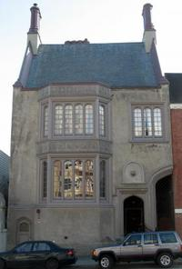
Tobin House
Half of a houseBuilt by Michael De Young-- founder of the San Francisco Chronicle-- for his daughter, Constance, the Tobin house was to be the first half of a pair. Built for the wealthy magnates daughters, his daughters, one of them at least, had other plans.
Designed in 1915 by prominent architect Willis Polk in Tudor Gothic Revival style, the house was next to the original site of Michael De Young's estate. De Young designed the two houses to be mirror images of each other, and the side of the house features a large archway that was meant to be complemented, and completed, by the neighboring house.
However, while Constance was happy to live in the house, his daughter Helen de Young had other plans, and said, "Thanks, but no, thanks, Dad." The second half of the mirror image house was never built leaving the archway ending abruptly where it meets the next building.
Read more about Tobin House on Atlas Obscura...
Category: Architectural Oddities
Location:
Edited by: rebeccaclara, Dylan
Fri, 17 Feb 2012 14:20:00 -0600
Gratitude Garden at ArtiSun Gallery
Gratitude Garden at ArtiSun Gallery
Gratitude Garden at ArtiSun GalleryAn art instillation for the sake of "raising vibrations."Tucked in the historic Iron Horse Station building in Hot Springs, North Carolina, the ArtiSun Gallery and Marketplace is home to a Gratitude Garden. This installation was constructed by story-collage artist, Mary Morgaine, in order to “raise the vibration." It holds in it a “gratitude urn." Here, you have the option to write down on a small piece of paper what specifically you are thankful for and to plant this paper in the urn.
ArtiSun also hosts a weekly “Farm Fresh Thursday", offering a menu that includes fresh organic vegetables, sustainable ocean caught fish, shitake mushrooms, and fresh goat milk yogurt among other local tasty treats, such as the homemade granola. The café is provided with delicious baked goods exclusively by Butter & Eggs Bakery, which is owned by local Wendy Stancil. Appalachain Fair Trade Coffee is the choice of brew here, and a portion of its proceeds is dontated to the Appalachain Trail which passes by the gallery’s front door. In addition, ArtiSun carries a large assortment of local and organic wines, Shakti Raw chocolate, and Buchi Mama kombucha.Read more about Gratitude Garden at ArtiSun Gallery on Atlas Obscura...Category: Curious Places of WorshipLocation: Edited by: katiebaker4, Annetta, Rachel, HJHausman
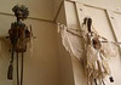
Gratitude Garden at ArtiSun Gallery
An art instillation for the sake of "raising vibrations."Tucked in the historic Iron Horse Station building in Hot Springs, North Carolina, the ArtiSun Gallery and Marketplace is home to a Gratitude Garden. This installation was constructed by story-collage artist, Mary Morgaine, in order to “raise the vibration." It holds in it a “gratitude urn." Here, you have the option to write down on a small piece of paper what specifically you are thankful for and to plant this paper in the urn.
ArtiSun also hosts a weekly “Farm Fresh Thursday", offering a menu that includes fresh organic vegetables, sustainable ocean caught fish, shitake mushrooms, and fresh goat milk yogurt among other local tasty treats, such as the homemade granola. The café is provided with delicious baked goods exclusively by Butter & Eggs Bakery, which is owned by local Wendy Stancil. Appalachain Fair Trade Coffee is the choice of brew here, and a portion of its proceeds is dontated to the Appalachain Trail which passes by the gallery’s front door. In addition, ArtiSun carries a large assortment of local and organic wines, Shakti Raw chocolate, and Buchi Mama kombucha.
Read more about Gratitude Garden at ArtiSun Gallery on Atlas Obscura...
Category: Curious Places of Worship
Location:
Edited by: katiebaker4, Annetta, Rachel, HJHausman
Fri, 17 Feb 2012 00:13:00 -0600
Brazil's Coffee Palace
Brazil's Coffee Palace
Brazil's Coffee PalaceMajestic building where Brazil's coffee brokers once bought and sold beans now houses a coffee museumIn the early part of the 20th century, coffee was Brazil's main export and source of money. The Coffee Palace was where that money was made.
Inaugurated in 1914 in the coastal town of Santos, the Brazilian "Palace of the Official Coffee Stock Exchange" was where the price of these coffee beans was determined. In effect, it was the financial center of Brazil, the coffee version of New York's Stock Exchange. It remained an active trading floor until 1950.
This wealth generated by coffee is clearly reflected in the grandness of the nicknamed "Coffee Palace." The building is topped with a 120-ft tall clock tower while Ceres, goddess of agriculture, and Mercury, god of commerce, look out from either side of the entrance. Inside, the opulence continues with an elaborate stained glass ceiling, inlaid marble floors, and a table made from jacaranda wood in the trader's room.
The two floor Coffee Museum housed within has scales, sacks, tasting tables, photography, and dioramas depicting the earlier era. Downstairs there is a cafe where you can sample coffees from around Brazil.Read more about Brazil's Coffee Palace on Atlas Obscura...Category: Museums and Collections, Unique Collections, Commercial CuriositiesLocation: Ilha do Barnabe, BrazilEdited by: rebeccaclara, Dylan
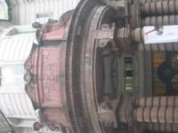
Brazil's Coffee Palace
Majestic building where Brazil's coffee brokers once bought and sold beans now houses a coffee museumIn the early part of the 20th century, coffee was Brazil's main export and source of money. The Coffee Palace was where that money was made.
Inaugurated in 1914 in the coastal town of Santos, the Brazilian "Palace of the Official Coffee Stock Exchange" was where the price of these coffee beans was determined. In effect, it was the financial center of Brazil, the coffee version of New York's Stock Exchange. It remained an active trading floor until 1950.
This wealth generated by coffee is clearly reflected in the grandness of the nicknamed "Coffee Palace." The building is topped with a 120-ft tall clock tower while Ceres, goddess of agriculture, and Mercury, god of commerce, look out from either side of the entrance. Inside, the opulence continues with an elaborate stained glass ceiling, inlaid marble floors, and a table made from jacaranda wood in the trader's room.
The two floor Coffee Museum housed within has scales, sacks, tasting tables, photography, and dioramas depicting the earlier era. Downstairs there is a cafe where you can sample coffees from around Brazil.
Read more about Brazil's Coffee Palace on Atlas Obscura...
Category: Museums and Collections, Unique Collections, Commercial Curiosities
Location: Ilha do Barnabe, Brazil
Edited by: rebeccaclara, Dylan
Tue, 06 Mar 2012 15:02:00 -0600
24-Hour-Sprinkles
24-Hour-Sprinkles
24-Hour-SprinklesIngenious bakery opens up the first Cupcake ATM at their flagship location in Beverly HillsIn what could quite possibly be the most frivolous yet exciting advancement in the competitive cupcake industry, the chain bakery "Sprinkles' has made its power move-24-hour cupcake dispensers or Cupcake ATMs.
Every day, 600 freshly baked cupcakes are waiting behind a facade that works much like the ATM cash machines we are already accustomed to. Any time, day or night, you can insert your credit card, make a selection from the rotating flavor descriptions, and for $4.00 a piece, purchase that emergency snack cake you so desperately needed. You can then watch on the display as a robotic arm retrieves your treat and delivers it through the cupcake chute located directly beneath the screen.
It seems unfair that the privileged residents of Beverly Hills (and their pooches, the machines dispense doggie treats as well) are the only ones receiving this remarkable technology. Fear not, for the cupcake ATM is coming to New York City in the sumer of 2012, and Sprinkles has been taking suggestions for other locations.
Besides its current 10 stores, they have implied they would like to place cupcake ATMs in towns and on streets that are nowhere near a Sprinkles store, insuring equal and just cupcake dispersal to all, and are taking suggestions.
As of 3/5/12, the only place this confectionary convenience can be enjoyed is on S. Santa Monica Blvd in the 90210, but keep your eye on the Sprinkles Facebook page for a Cupcake ATM opening up near you.Read more about 24-Hour-Sprinkles on Atlas Obscura...Category: Commercial Curiosities, Bizarre Restaurants and BarsLocation: Edited by: Rachel

24-Hour-Sprinkles
Ingenious bakery opens up the first Cupcake ATM at their flagship location in Beverly HillsIn what could quite possibly be the most frivolous yet exciting advancement in the competitive cupcake industry, the chain bakery "Sprinkles' has made its power move-24-hour cupcake dispensers or Cupcake ATMs.
Every day, 600 freshly baked cupcakes are waiting behind a facade that works much like the ATM cash machines we are already accustomed to. Any time, day or night, you can insert your credit card, make a selection from the rotating flavor descriptions, and for $4.00 a piece, purchase that emergency snack cake you so desperately needed. You can then watch on the display as a robotic arm retrieves your treat and delivers it through the cupcake chute located directly beneath the screen.
It seems unfair that the privileged residents of Beverly Hills (and their pooches, the machines dispense doggie treats as well) are the only ones receiving this remarkable technology. Fear not, for the cupcake ATM is coming to New York City in the sumer of 2012, and Sprinkles has been taking suggestions for other locations.
Besides its current 10 stores, they have implied they would like to place cupcake ATMs in towns and on streets that are nowhere near a Sprinkles store, insuring equal and just cupcake dispersal to all, and are taking suggestions.
As of 3/5/12, the only place this confectionary convenience can be enjoyed is on S. Santa Monica Blvd in the 90210, but keep your eye on the Sprinkles Facebook page for a Cupcake ATM opening up near you.
Read more about 24-Hour-Sprinkles on Atlas Obscura...
Category: Commercial Curiosities, Bizarre Restaurants and Bars
Location:
Edited by: Rachel
Mon, 05 Mar 2012 23:30:00 -0600
Bourn Mansion
Bourn Mansion
Bourn MansionA brooding mansion of clinker brick stands out among the Victorian houses of Pacific Heights William Bourn II was said to be the richest man in San Francisco. Inheriting a fortune in mining, and then later building up Pacific, Gas and Electric, now known as PG&E. In fact he may have even been one of the richest men in the world when he built his grandiose town house in the posh neighborhood of Pacific Heights.
Modest by Bourn's standards, this 27-room mansion was built in 1896 by Willis Polk. A masterpiece of the bricklayers' and stonemasons' arts, the mansion was only one of the elaborate buildings Bourn owned, the likes of which included palatial Empire Mine in Grass Valley, CA., and the Bourn's famous estate, Filoli in Woodside.
Despite it's classic, upper crust beginnings, the 70's were a crazy time in San Francisco, and the mansion saw it's share of debauchery. Purchased by eccentric Arden Van Upp, what was once a classy, Georgian-style home became a swinging party pad. The perfect place for lavish hedonism, the mansion was visited by rockstars, movie stars, porn stars, and overflowed with good drugs, fine wines, and sexual abandon.
Eventually, the party ended, and like most narcissistic eccentrics, Arden Van Upp fell out of favor, while the house fell into disrepair. She became a shut in, her only companions her white Chinchilla Persian cats. Garbage piled up, as did the debt and the lawsuits. Eventually, Van Upp became bankrupt and the house was deemed uninhabitable. By 1998, the mansion was so decimated that the homeless people squatting inside had to move onto the yard.
The house was finally cleaned up and sold at auction in 2010, and despite assessments that repair would cost quite a bit more than the house is worth, it remains a Historical Landmark and still stands at 2550 Webster Street. Locals who are attached to the mansion with the hard-luck story are hoping that the new owners are willing to restore it's former beauty, despite the cost.Read more about Bourn Mansion on Atlas Obscura...Category: Architectural OdditiesLocation: Edited by: rebeccaclara, Rachel, Dylan

Bourn Mansion
A brooding mansion of clinker brick stands out among the Victorian houses of Pacific Heights William Bourn II was said to be the richest man in San Francisco. Inheriting a fortune in mining, and then later building up Pacific, Gas and Electric, now known as PG&E. In fact he may have even been one of the richest men in the world when he built his grandiose town house in the posh neighborhood of Pacific Heights.
Modest by Bourn's standards, this 27-room mansion was built in 1896 by Willis Polk. A masterpiece of the bricklayers' and stonemasons' arts, the mansion was only one of the elaborate buildings Bourn owned, the likes of which included palatial Empire Mine in Grass Valley, CA., and the Bourn's famous estate, Filoli in Woodside.
Despite it's classic, upper crust beginnings, the 70's were a crazy time in San Francisco, and the mansion saw it's share of debauchery. Purchased by eccentric Arden Van Upp, what was once a classy, Georgian-style home became a swinging party pad. The perfect place for lavish hedonism, the mansion was visited by rockstars, movie stars, porn stars, and overflowed with good drugs, fine wines, and sexual abandon.
Eventually, the party ended, and like most narcissistic eccentrics, Arden Van Upp fell out of favor, while the house fell into disrepair. She became a shut in, her only companions her white Chinchilla Persian cats. Garbage piled up, as did the debt and the lawsuits. Eventually, Van Upp became bankrupt and the house was deemed uninhabitable. By 1998, the mansion was so decimated that the homeless people squatting inside had to move onto the yard.
The house was finally cleaned up and sold at auction in 2010, and despite assessments that repair would cost quite a bit more than the house is worth, it remains a Historical Landmark and still stands at 2550 Webster Street. Locals who are attached to the mansion with the hard-luck story are hoping that the new owners are willing to restore it's former beauty, despite the cost.
Read more about Bourn Mansion on Atlas Obscura...
Category: Architectural Oddities
Location:
Edited by: rebeccaclara, Rachel, Dylan
Mon, 05 Mar 2012 21:55:00 -0600
The Return of the Cows
The Return of the Cows
The Return of the CowsArt and a pun, all in one.There aren't many reasons to visit quiet Dietrich-Bonhoeffer Strasse, which lies on the bleeding edge of gentrified Prinzlauerberg's encroachment into (formerly) gritty Friedrichshain. But Sergej Dott's whimsical public art installation, "Die Rückkehr der Kühe" ("The Return of the Cows") just might make it worth the trip.
Halfway down the block, if you peer into the empty lot and look up, you'll see a green field full of larger-than-life cows "walking" up and down the side of a pre-war Berlin apartment house.
Dott specializes in public installations, including the cow installations he calls "Kuhunst." Savvy Germanophiles will recognize the pun on the German words for art ("Kunst") and cow ("Kuh"). Another can be found just west of The Return of the Cows, at Kollwitzstraße 18 in Prinzlauerberg.Read more about The Return of the Cows on Atlas Obscura...Category: Architectural Oddities, Outsider ArchitectureLocation: Berlin, GermanyEdited by: rebeccaclara, Rachel
 they go.")
The Return of the Cows
Art and a pun, all in one.There aren't many reasons to visit quiet Dietrich-Bonhoeffer Strasse, which lies on the bleeding edge of gentrified Prinzlauerberg's encroachment into (formerly) gritty Friedrichshain. But Sergej Dott's whimsical public art installation, "Die Rückkehr der Kühe" ("The Return of the Cows") just might make it worth the trip.
Halfway down the block, if you peer into the empty lot and look up, you'll see a green field full of larger-than-life cows "walking" up and down the side of a pre-war Berlin apartment house.
Dott specializes in public installations, including the cow installations he calls "Kuhunst." Savvy Germanophiles will recognize the pun on the German words for art ("Kunst") and cow ("Kuh"). Another can be found just west of The Return of the Cows, at Kollwitzstraße 18 in Prinzlauerberg.
Read more about The Return of the Cows on Atlas Obscura...
Category: Architectural Oddities, Outsider Architecture
Location: Berlin, Germany
Edited by: rebeccaclara, Rachel
Sun, 04 Mar 2012 22:33:00 -0600
Berlin Botanical Garden
Berlin Botanical Garden
Berlin Botanical GardenStarted as a kitchen garden, now the second largest botanical garden in the worldEstablished as a kitchen garden in 1679, the Botanical Garden in Berlin is the second largest botanical garden in the world, second only to Kew Gardens, located in England.
The garden evolved from a kitchen garden growing vegetables and hops for beer brewing to a “considerable plant assemblage,” and in 1879 the Royal Botanical Museum was founded, encompassing every area of botany.
The sheer size of the gardens and the lush density of the plant life is overwhelming, especially when taking into account that so many of these plants are endangered in their natural habitats. What grows strong and vibrant in this collection is often threatened with extinction elsewhere. This assembly of gardens, sixteen greenhouses, and landscapes exhibit a microcosm of nature's diversity, home to flowered vines, rock cliff waterfalls, timber bamboo reaching to the sky, and a carpet of ferns, orchids, and bromeliads at your feet.
The Victoria House delivers a proper tropical environment with sweltering humidity that the orchids and lilies love, a bamboo bridge that transports you over the basin and into an exotic plant paradise.
With 43 hectares and close to 22,000 plant species, one visit won't even come close to allowing you to see everything. Make sure you make the most of your day there and don't miss the Great Pavillion, which at 20 meters high and 30x60 meters in floor area is the largest glass house in the world.
Other must see displays include the giant water lilies, carnivorous plant specimens, and a small cemetery, located to the left of the green house complex when coming from access at the Königin-Luise-Platz. Keep a look out for the sarcophagus of Friedrich Althoff, a university tutor deceased in 1908, which consists of a dolorous female figure meant to represent science in mourning.
Also of interest, but currently not open to the public (or anyone for that matter) is a series of tunnels built near the Botanical Gardens in WWII. Entrance to the bunker was through two tunnels leading from the farm of the botanical garden. Built for the SS to house personal and files during air raids, after the war the entrances were blown up, and the tunnels now serve as a winter roost for bats.Read more about Berlin Botanical Garden on Atlas Obscura...Category: Extraordinary Flora, Natural History, Horticultural MarvelsLocation: Berlin, GermanyEdited by: Rachel, Dylan

Berlin Botanical Garden
Started as a kitchen garden, now the second largest botanical garden in the worldEstablished as a kitchen garden in 1679, the Botanical Garden in Berlin is the second largest botanical garden in the world, second only to Kew Gardens, located in England.
The garden evolved from a kitchen garden growing vegetables and hops for beer brewing to a “considerable plant assemblage,” and in 1879 the Royal Botanical Museum was founded, encompassing every area of botany.
The sheer size of the gardens and the lush density of the plant life is overwhelming, especially when taking into account that so many of these plants are endangered in their natural habitats. What grows strong and vibrant in this collection is often threatened with extinction elsewhere. This assembly of gardens, sixteen greenhouses, and landscapes exhibit a microcosm of nature's diversity, home to flowered vines, rock cliff waterfalls, timber bamboo reaching to the sky, and a carpet of ferns, orchids, and bromeliads at your feet.
The Victoria House delivers a proper tropical environment with sweltering humidity that the orchids and lilies love, a bamboo bridge that transports you over the basin and into an exotic plant paradise.
With 43 hectares and close to 22,000 plant species, one visit won't even come close to allowing you to see everything. Make sure you make the most of your day there and don't miss the Great Pavillion, which at 20 meters high and 30x60 meters in floor area is the largest glass house in the world.
Other must see displays include the giant water lilies, carnivorous plant specimens, and a small cemetery, located to the left of the green house complex when coming from access at the Königin-Luise-Platz. Keep a look out for the sarcophagus of Friedrich Althoff, a university tutor deceased in 1908, which consists of a dolorous female figure meant to represent science in mourning.
Also of interest, but currently not open to the public (or anyone for that matter) is a series of tunnels built near the Botanical Gardens in WWII. Entrance to the bunker was through two tunnels leading from the farm of the botanical garden. Built for the SS to house personal and files during air raids, after the war the entrances were blown up, and the tunnels now serve as a winter roost for bats.
Read more about Berlin Botanical Garden on Atlas Obscura...
Category: Extraordinary Flora, Natural History, Horticultural Marvels
Location: Berlin, Germany
Edited by: Rachel, Dylan
Fri, 02 Mar 2012 18:33:00 -0600
The Flintstone House
The Flintstone House
The Flintstone HouseA burnt orange monolithic dome structure perched on a hillside near Interstate 280Drivers heading north to San Francisco on Interstate 280 will notice a peculiar home just east of the Eugene A. Doran Memorial Bridge. The house, playfully nicknamed by Bay Area residents as The Flintstone House is actually an experimental house built in 1976, with rooms in which every surface is rounded. Beneath its burnt orange (originally white) coat of paint is a slew of cement, rebar, plaster putty, wire mesh and aeronautical balloons.
The house looks somewhat like a series of inflated balloons, which makes sense, as this was how it was constructed. Steel rebar and wire mesh frames were constructed over large inflated balloons and then sprayed with high velocity concrete known as gunite or "shotcrete."
This building technique, known as "monolithic dome construction" was invented by the South brothers in Shelly, Idaho in 1975. One year later, Bay Area architect William Nicholson built a series of domes using this method, including The Flintstone House in Hillsborough, California.
The home, which is also referred to as the Dome House, Gumby House and Bubble House, is a three-bedroom, two-bath house with a two-car garage and about 2,700 square feet of living space. The upstairs bedroom, located in the tallest dome, has a spiral staircase inspired by a sugar-cone with a diameter that increases to equal that of the floor above. The master bathroom is also unique with its scattering of large rocks in place of floor tiles.
While The Flintstone House is marveled by many passerby, it is also loathed by many Hillsborough residents. In the mid-1980s the home began to show serious wear as water runoff on the steep hillside caused the home to sink and the walls began to develop deep cracks. Word spread of such problems and several neighbors pushed to have the home removed. However, to their dismay, a severe renovation and change in ownership brought the home back to life in 1987. It took on its characteristic "Flintstone" look when it was painted completely orange in 2000.
Today, The Flintstone House is as well known for its architecture as it is for its sporadic tenants, which has led to several urban legends surrounding the home's ownership. It is rumored that George Lucas once owned and that O.J. Simpson made a bid following his infamous 1995 trial. It is also said that several famous Sillicon Valley investors have lived there as well.
Regardless of ownership and neighborhood complaints, The Flintstone House remains standing. Overlooking the freeway and reservoir, it continues to serve as an unofficial California landmark and lighthearted reminder of the Bay Area’s forward, yet sometimes quirky, thinking.Read more about The Flintstone House on Atlas Obscura...Category: Eccentric Homes, Outsider ArchitectureLocation: Edited by: Duck_Muscle, Rachel, Dylan
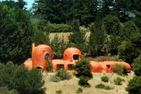
The Flintstone House
A burnt orange monolithic dome structure perched on a hillside near Interstate 280Drivers heading north to San Francisco on Interstate 280 will notice a peculiar home just east of the Eugene A. Doran Memorial Bridge. The house, playfully nicknamed by Bay Area residents as The Flintstone House is actually an experimental house built in 1976, with rooms in which every surface is rounded. Beneath its burnt orange (originally white) coat of paint is a slew of cement, rebar, plaster putty, wire mesh and aeronautical balloons.
The house looks somewhat like a series of inflated balloons, which makes sense, as this was how it was constructed. Steel rebar and wire mesh frames were constructed over large inflated balloons and then sprayed with high velocity concrete known as gunite or "shotcrete."
This building technique, known as "monolithic dome construction" was invented by the South brothers in Shelly, Idaho in 1975. One year later, Bay Area architect William Nicholson built a series of domes using this method, including The Flintstone House in Hillsborough, California.
The home, which is also referred to as the Dome House, Gumby House and Bubble House, is a three-bedroom, two-bath house with a two-car garage and about 2,700 square feet of living space. The upstairs bedroom, located in the tallest dome, has a spiral staircase inspired by a sugar-cone with a diameter that increases to equal that of the floor above. The master bathroom is also unique with its scattering of large rocks in place of floor tiles.
While The Flintstone House is marveled by many passerby, it is also loathed by many Hillsborough residents. In the mid-1980s the home began to show serious wear as water runoff on the steep hillside caused the home to sink and the walls began to develop deep cracks. Word spread of such problems and several neighbors pushed to have the home removed. However, to their dismay, a severe renovation and change in ownership brought the home back to life in 1987. It took on its characteristic "Flintstone" look when it was painted completely orange in 2000.
Today, The Flintstone House is as well known for its architecture as it is for its sporadic tenants, which has led to several urban legends surrounding the home's ownership. It is rumored that George Lucas once owned and that O.J. Simpson made a bid following his infamous 1995 trial. It is also said that several famous Sillicon Valley investors have lived there as well.
Regardless of ownership and neighborhood complaints, The Flintstone House remains standing. Overlooking the freeway and reservoir, it continues to serve as an unofficial California landmark and lighthearted reminder of the Bay Area’s forward, yet sometimes quirky, thinking.
Read more about The Flintstone House on Atlas Obscura...
Category: Eccentric Homes, Outsider Architecture
Location:
Edited by: Duck_Muscle, Rachel, Dylan
Fri, 02 Mar 2012 00:45:00 -0600
House Attack
House Attack
House AttackThe house that took a plunge into the facade of a museumMuseum Moderner Kunst (MUMOK) pride themselves on their extensive collection of 20th and 21st century modern art, and their status as the largest art museum in Austria. This may or may not be why a small family home attempted to bring them down by hurtling itself into the roof of the museum, wedging its roof helplessly into the mammoth's frame.
Artist Erwin Wurm is known for his unusual, sometimes humorous, and occasionally puzzling work. While his "House Attack" piece could fall into any or all of those categories, it's at the very least intriguing. The sensation of walking underneath a house that is perched in such a precarious position may spark a natural instinct to move out from under it with haste, but from a distance it's hard not to smirk at the implied predicament of the little guy.
Located in the heart of Vienna, House Attack is the first modern art piece you will see when arriving at the museum, but go inside to see an extensive collection of international art, including works from classical modernity, Cubism, Futurism and Surrealism up to the art movements of the 1960s and 1970s, Pop Art, Fluxus and Nouveau Réalisme.Read more about House Attack on Atlas Obscura...Category: Museums and Collections, Architectural Oddities, Outsider ArchitectureLocation: Vienna, AustriaEdited by: Rachel, Seth Teicher
House Attack
The house that took a plunge into the facade of a museumMuseum Moderner Kunst (MUMOK) pride themselves on their extensive collection of 20th and 21st century modern art, and their status as the largest art museum in Austria. This may or may not be why a small family home attempted to bring them down by hurtling itself into the roof of the museum, wedging its roof helplessly into the mammoth's frame.
Artist Erwin Wurm is known for his unusual, sometimes humorous, and occasionally puzzling work. While his "House Attack" piece could fall into any or all of those categories, it's at the very least intriguing. The sensation of walking underneath a house that is perched in such a precarious position may spark a natural instinct to move out from under it with haste, but from a distance it's hard not to smirk at the implied predicament of the little guy.
Located in the heart of Vienna, House Attack is the first modern art piece you will see when arriving at the museum, but go inside to see an extensive collection of international art, including works from classical modernity, Cubism, Futurism and Surrealism up to the art movements of the 1960s and 1970s, Pop Art, Fluxus and Nouveau Réalisme.
Read more about House Attack on Atlas Obscura...
Category: Museums and Collections, Architectural Oddities, Outsider Architecture
Location: Vienna, Austria
Edited by: Rachel, Seth Teicher
Thu, 01 Mar 2012 00:40:00 -0600
Los Angeles Zoo Botanical Gardens
Los Angeles Zoo Botanical Gardens
Los Angeles Zoo Botanical GardensThe L.A. Zoo has a secret garden of rare bootleg cycads, a palm specimen dating back 280 million yearsMost zoos have some sort of native botanical landscape that for flora fans can sometimes rival the fauna, the L.A. Zoo is no exception. While the landscape is covered with strange succulents and clumps of mexican sage, there is something much more exotic planted here, with a much more interesting history.
Away from the expected California wildflowers and blowing grasses, there is a secret garden of rescued plants, the ancient cycads. Kidnapped by poachers from their native homes and smuggled in by nefarious plant dealers, this rare, palm-like specimen dates back to the Permian Period. 280 million years in existence, cycads can live for a thousand years, and fetch a pretty penny on the black market. A two-year investigation led to an international sting that reclaimed nearly 1,000 cycads, 94 of which were acquired and are now cared for by the L.A. Zoo horticulturist.Read more about Los Angeles Zoo Botanical Gardens on Atlas Obscura...Category: Natural Wonders, Extraordinary Flora, Natural HistoryLocation: Edited by: Rachel
Los Angeles Zoo Botanical Gardens
The L.A. Zoo has a secret garden of rare bootleg cycads, a palm specimen dating back 280 million yearsMost zoos have some sort of native botanical landscape that for flora fans can sometimes rival the fauna, the L.A. Zoo is no exception. While the landscape is covered with strange succulents and clumps of mexican sage, there is something much more exotic planted here, with a much more interesting history.
Away from the expected California wildflowers and blowing grasses, there is a secret garden of rescued plants, the ancient cycads. Kidnapped by poachers from their native homes and smuggled in by nefarious plant dealers, this rare, palm-like specimen dates back to the Permian Period. 280 million years in existence, cycads can live for a thousand years, and fetch a pretty penny on the black market. A two-year investigation led to an international sting that reclaimed nearly 1,000 cycads, 94 of which were acquired and are now cared for by the L.A. Zoo horticulturist.
Read more about Los Angeles Zoo Botanical Gardens on Atlas Obscura...
Category: Natural Wonders, Extraordinary Flora, Natural History
Location:
Edited by: Rachel
Thu, 01 Mar 2012 00:00:00 -0600
The Enchanted Forest
The Enchanted Forest
The Enchanted ForestThe Enchanted Forest is an old world fairytale-land with over 350 fairy folk figurines hidden amongst 800 year old cedars. Artist Doris Needham and her husband Ernest needed a place to put her hand-sculpted cement creations, so they bought a forest and filled it with enchanted figures from fairytales and nursery rhymes. During the 1950s, they cleared trails and constructed rock walls over 8 acres with nothing but hand tools. Ernest built them a little home that looked a bit like a gingerbread house, and installed a gravity water system using the waterfall across the highway, which is still in use today.
When Roger's Pass opened, traffic began being diverted through the Needhams' unusual haven, and in 1960 they decided to officially open up their Enchanted Forest to the public. What was once just a project they enjoyed together to invent their own happy place for their retirement was now a highly popular tourist spot for sightseers. One could not drive by and resist dragons and pirates lurking on boulders and behind trees, dwarves and fairies sharing the pools at the foot of waterfalls, or the adorable Candy Cane house belonging to the couple that created it all.
By 1970, a million people had stopped to visit the castle and marvel at the statues and tree houses and all the other surprises nestled in the Needhams' forest. The couple realized that it had become unmanageable, and their retirement idea had turned into a challenging full time job. Wanting to enjoy the fruits of their labor before it was too late, Doris and Ernest sold their forest to Rocky and Juliet Ehlers and their children, Aza, Silas and Naomi.
Fortunately, the Ehlers loved the Enchanted Forest for what it was, and have continued to care for it and keep it available to visitors. The forest is full of twists and turns, each corner revealing a new small cottage with ferns growing on the roof, or a favorite nursery character sitting on a wall, full of whimsy. They boast over 350 figurines, a pirate ship, and the tallest treehouse in British Columbia. The forest itself is a beautiful site, with beaver ponds for boating, 800 year-old cedars, salmon spawning and moose and caribou sightings during migration months.Read more about The Enchanted Forest on Atlas Obscura...Category: Strange Statues, Follies and Grottoes, Outsider ArchitectureLocation: Edited by: elinar, Rachel, Seth Teicher
The Enchanted Forest
The Enchanted Forest is an old world fairytale-land with over 350 fairy folk figurines hidden amongst 800 year old cedars. Artist Doris Needham and her husband Ernest needed a place to put her hand-sculpted cement creations, so they bought a forest and filled it with enchanted figures from fairytales and nursery rhymes. During the 1950s, they cleared trails and constructed rock walls over 8 acres with nothing but hand tools. Ernest built them a little home that looked a bit like a gingerbread house, and installed a gravity water system using the waterfall across the highway, which is still in use today.
When Roger's Pass opened, traffic began being diverted through the Needhams' unusual haven, and in 1960 they decided to officially open up their Enchanted Forest to the public. What was once just a project they enjoyed together to invent their own happy place for their retirement was now a highly popular tourist spot for sightseers. One could not drive by and resist dragons and pirates lurking on boulders and behind trees, dwarves and fairies sharing the pools at the foot of waterfalls, or the adorable Candy Cane house belonging to the couple that created it all.
By 1970, a million people had stopped to visit the castle and marvel at the statues and tree houses and all the other surprises nestled in the Needhams' forest. The couple realized that it had become unmanageable, and their retirement idea had turned into a challenging full time job. Wanting to enjoy the fruits of their labor before it was too late, Doris and Ernest sold their forest to Rocky and Juliet Ehlers and their children, Aza, Silas and Naomi.
Fortunately, the Ehlers loved the Enchanted Forest for what it was, and have continued to care for it and keep it available to visitors. The forest is full of twists and turns, each corner revealing a new small cottage with ferns growing on the roof, or a favorite nursery character sitting on a wall, full of whimsy. They boast over 350 figurines, a pirate ship, and the tallest treehouse in British Columbia. The forest itself is a beautiful site, with beaver ponds for boating, 800 year-old cedars, salmon spawning and moose and caribou sightings during migration months.
Read more about The Enchanted Forest on Atlas Obscura...
Category: Strange Statues, Follies and Grottoes, Outsider Architecture
Location:
Edited by: elinar, Rachel, Seth Teicher
Wed, 29 Feb 2012 10:08:00 -0600
Secret Tiled Staircase
Secret Tiled Staircase
Secret Tiled StaircaseAn artsy hidden staircase leads to breathtaking views of San FranciscoThe 16th Avenue Staircase is 163 steps of mosaic tiles, a colorful staircase hidden in the quiet Sunset district of San Francisco. This neighborhood has few other tourist draws, but those who find the staircase will be rewarded with sweeping views of the city, and a beautiful succulent garden design framing it.
The project began in 2003 and was completed in 2005, with the help of artists and many neighborhood volunteers, and was inspired by the Selarón staircase in Rio de Janeiro, a brightly colored tiled staircase and popular tourist destination.
All the mosaics are donated by the community.. At the very top is the moon (the stairs ascend from "sea Level" to the moon--get it?). There's also another garden at the bottom and one of the last crops of Franciscan formation at the top (it has its own biozone!).Read more about Secret Tiled Staircase on Atlas Obscura...Category: Outsider Art, Architectural OdditiesLocation: Edited by: rebeccaclara, Rachel
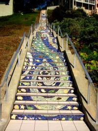
Secret Tiled Staircase
An artsy hidden staircase leads to breathtaking views of San FranciscoThe 16th Avenue Staircase is 163 steps of mosaic tiles, a colorful staircase hidden in the quiet Sunset district of San Francisco. This neighborhood has few other tourist draws, but those who find the staircase will be rewarded with sweeping views of the city, and a beautiful succulent garden design framing it.
The project began in 2003 and was completed in 2005, with the help of artists and many neighborhood volunteers, and was inspired by the Selarón staircase in Rio de Janeiro, a brightly colored tiled staircase and popular tourist destination.
All the mosaics are donated by the community.. At the very top is the moon (the stairs ascend from "sea Level" to the moon--get it?). There's also another garden at the bottom and one of the last crops of Franciscan formation at the top (it has its own biozone!).
Read more about Secret Tiled Staircase on Atlas Obscura...
Category: Outsider Art, Architectural Oddities
Location:
Edited by: rebeccaclara, Rachel
Tue, 28 Feb 2012 21:57:00 -0600
Magoksa Temple
Magoksa Temple
Magoksa TempleAncient temple is home to centuries of art and spiritual artifactsFounded in 640 by Monk Jajangyulsa, Magoksa is a breathtaking place of worship, especially in the spring when the area surrounded by Mt. Taehwasan comes alive, littered with cherry blossoms and magnolias. The exquisite landscape is only one of the many riches this temple possesses.
The temple survived the Seven Year War largely unfazed, and was used as a refuge during the early Joseon Dynasty. It's resilience and ancient history has left it abundant with treasures, including manuscripts made with liquid gold and silver, bronze-tipped pagodas of which only three remain in the world, and Chinese junipers planted by scholar and independence leader Kim Ku.
Centuries worth of ornate gates, paintings featuring dragons and saints, golden statues, watchful Bodhisattvas and a myriad of Buddhas are scattered about the carefully manicured grounds. Pillars hold the names of the prominent people who have visited the temple over the years, and a stream in the shape of a ying yang symbol weaves gently through the trees. Not only can you visit the grounds, but the temple conducts workshops on meditation and group therapy. More info can be found on Korea's visitor website.Read more about Magoksa Temple on Atlas Obscura...Category: Strange Statues, Architectural Oddities, Curious Places of WorshipLocation: Magok-sa, South KoreaEdited by: serflac, Rachel
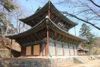
Magoksa Temple
Ancient temple is home to centuries of art and spiritual artifactsFounded in 640 by Monk Jajangyulsa, Magoksa is a breathtaking place of worship, especially in the spring when the area surrounded by Mt. Taehwasan comes alive, littered with cherry blossoms and magnolias. The exquisite landscape is only one of the many riches this temple possesses.
The temple survived the Seven Year War largely unfazed, and was used as a refuge during the early Joseon Dynasty. It's resilience and ancient history has left it abundant with treasures, including manuscripts made with liquid gold and silver, bronze-tipped pagodas of which only three remain in the world, and Chinese junipers planted by scholar and independence leader Kim Ku.
Centuries worth of ornate gates, paintings featuring dragons and saints, golden statues, watchful Bodhisattvas and a myriad of Buddhas are scattered about the carefully manicured grounds. Pillars hold the names of the prominent people who have visited the temple over the years, and a stream in the shape of a ying yang symbol weaves gently through the trees. Not only can you visit the grounds, but the temple conducts workshops on meditation and group therapy. More info can be found on Korea's visitor website.
Read more about Magoksa Temple on Atlas Obscura...
Category: Strange Statues, Architectural Oddities, Curious Places of Worship
Location: Magok-sa, South Korea
Edited by: serflac, Rachel
Tue, 28 Feb 2012 00:10:00 -0600
Red Bay, Labrador.
Red Bay, Labrador.
Red Bay, Labrador.A forlorn fishing village on the coast of Labrador, full of shipwrecks and Spanish gold.Labrador is a place to visit, but only if you like isolation and natural beauty. To get to Red Bay, one must travel up the western coast of Newfoundland, a pleasure in itself, and then travel by ferry to the Quebec/Labrador border.
Once there, an astounding drive through pine trees and jagged rocks will deposit you in a fog-shrouded village called Red Bay.
Red Bay in itself doesn't boast much, interesting box like houses, few roads, but the town's mystique comes from its natural beauty and its history. Red Bay is quite literally a sheltered bay, surrounded with rocks and hills. From the coast, icebergs dance by, and in the distance, the lucky can spot the flumes of whale pods. The town has an anachronistic feel to it, with an aura that has stood still for centuries.
It was in this natural bay that the Spanish sought shelter, between 400-500 years ago. The Basques, from Southern France and Northern Spain, sent whalers to this remote location hoping to catch the Right and the Bowhead whales. In 1565, a Spanish whaling ship sank off the coast of Red Bay. A further three "trans-oceanic" ships have been discovered off the coast of Red Bay, and a cemetery nearby holds the remains of 140 whalers. Oh, and don't forget Captain Kidd's treasure, buried somewhere near a "pond on a hill."Read more about Red Bay, Labrador. on Atlas Obscura...Category: Cultures and Civilizations Location: Edited by: likethefox, Rachel, Seth Teicher
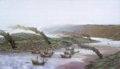
Red Bay, Labrador.
A forlorn fishing village on the coast of Labrador, full of shipwrecks and Spanish gold.Labrador is a place to visit, but only if you like isolation and natural beauty. To get to Red Bay, one must travel up the western coast of Newfoundland, a pleasure in itself, and then travel by ferry to the Quebec/Labrador border.
Once there, an astounding drive through pine trees and jagged rocks will deposit you in a fog-shrouded village called Red Bay.
Red Bay in itself doesn't boast much, interesting box like houses, few roads, but the town's mystique comes from its natural beauty and its history. Red Bay is quite literally a sheltered bay, surrounded with rocks and hills. From the coast, icebergs dance by, and in the distance, the lucky can spot the flumes of whale pods. The town has an anachronistic feel to it, with an aura that has stood still for centuries.
It was in this natural bay that the Spanish sought shelter, between 400-500 years ago. The Basques, from Southern France and Northern Spain, sent whalers to this remote location hoping to catch the Right and the Bowhead whales. In 1565, a Spanish whaling ship sank off the coast of Red Bay. A further three "trans-oceanic" ships have been discovered off the coast of Red Bay, and a cemetery nearby holds the remains of 140 whalers. Oh, and don't forget Captain Kidd's treasure, buried somewhere near a "pond on a hill."
Read more about Red Bay, Labrador. on Atlas Obscura...
Category: Cultures and Civilizations
Location:
Edited by: likethefox, Rachel, Seth Teicher
Mon, 27 Feb 2012 13:56:00 -0600
Waikumete Cemetery
Waikumete Cemetery
Waikumete CemeteryHome of a memorial and the the unidentified remains of the 1979 Mt. Erebus Disaster On November 28, 1979, Air New Zealand flight TE901 crashed into Antarctica’s Mt. Erebus , killing all 257 people on board. The recovery mission started the next day and lasted until December 10th.
Whatever remains that were found were flown back to New Zealand. After weeks of analysis, the medical team successfully identified 213 of the victims. The bodies that were unidentifiable were placed in 16 caskets and buried at Waikumete Cemetery in West Auckland on February 22, 1980. The grave site was marked with a memorial bearing the names of those 44 people. Nearby, a cherry tree was planted to honor the 24 passengers that came from Japan.
Every year, a wreath is laid at the memorial. In 2009, the community held a service to mark the 30th anniversary of the disaster.Read more about Waikumete Cemetery on Atlas Obscura...Category: Catacombs, Crypts, & CemeteriesLocation: Edited by: Annetta
Waikumete Cemetery
Home of a memorial and the the unidentified remains of the 1979 Mt. Erebus Disaster On November 28, 1979, Air New Zealand flight TE901 crashed into Antarctica’s Mt. Erebus , killing all 257 people on board. The recovery mission started the next day and lasted until December 10th.
Whatever remains that were found were flown back to New Zealand. After weeks of analysis, the medical team successfully identified 213 of the victims. The bodies that were unidentifiable were placed in 16 caskets and buried at Waikumete Cemetery in West Auckland on February 22, 1980. The grave site was marked with a memorial bearing the names of those 44 people. Nearby, a cherry tree was planted to honor the 24 passengers that came from Japan.
Every year, a wreath is laid at the memorial. In 2009, the community held a service to mark the 30th anniversary of the disaster.
Read more about Waikumete Cemetery on Atlas Obscura...
Category: Catacombs, Crypts, & Cemeteries
Location:
Edited by: Annetta
Mon, 27 Feb 2012 00:29:00 -0600
Vargas Swamp Lancers Memorial
Vargas Swamp Lancers Memorial
Vargas Swamp Lancers MemorialLargest monument in Colombia depicts 14 lancers who drove back an armyCreated by artist Rodrigo Arenas Betancur, the Vargas Swamp Lancers Memorial is an impressively grandiose depiction of a frozen moment in time during an unlikely and successful skirmish during the Colombian War of Independence.
The Vargas Swamp Battle was a conflict near Paipa in 1819, led by Simón Bolívar, who was attempting to push back Spanish forces to protect a poorly guarded vantage point. Despite exhausted troops and trekking through swampy terrain, the Patriot forces were able to overcome the Royalist army, a cavalry attack by only 14 Venezuelan Lancers being the final push needed for victory.
The 108 ft. tall bronze monument is a memorial to the battle, and depicts the 14 brave soldiers on horseback, armed with nothing but their lances, boldly charging toward their mighty foe. It's located in the Boyacá Department of Colombia.Read more about Vargas Swamp Lancers Memorial on Atlas Obscura...Category: Unusual Monuments, Strange StatuesLocation: Edited by: Rachel, Seth Teicher
Vargas Swamp Lancers Memorial
Largest monument in Colombia depicts 14 lancers who drove back an armyCreated by artist Rodrigo Arenas Betancur, the Vargas Swamp Lancers Memorial is an impressively grandiose depiction of a frozen moment in time during an unlikely and successful skirmish during the Colombian War of Independence.
The Vargas Swamp Battle was a conflict near Paipa in 1819, led by Simón Bolívar, who was attempting to push back Spanish forces to protect a poorly guarded vantage point. Despite exhausted troops and trekking through swampy terrain, the Patriot forces were able to overcome the Royalist army, a cavalry attack by only 14 Venezuelan Lancers being the final push needed for victory.
The 108 ft. tall bronze monument is a memorial to the battle, and depicts the 14 brave soldiers on horseback, armed with nothing but their lances, boldly charging toward their mighty foe. It's located in the Boyacá Department of Colombia.
Read more about Vargas Swamp Lancers Memorial on Atlas Obscura...
Category: Unusual Monuments, Strange Statues
Location:
Edited by: Rachel, Seth Teicher
Fri, 24 Feb 2012 10:30:00 -0600
Underground Tunnels of Los Angeles
Underground Tunnels of Los Angeles
Underground Tunnels of Los AngelesDuring prohibition, corrupt (or “fun” depending on how you look at it) city officials ran prohibition dens under the streets of Downtown Los Angeles.
While the rest of the country was forced to go dry, underneath Downtown Los Angeles the party never stopped. Despite prohibition laws, eleven miles of service tunnels became passageways to basement speakeasies with innocuous fronts above ground. Patrons were able to move about under the city, boozing it up without a care in the world, while the Mayor's office ran the supply of hootch.
King Eddy Saloon, an establishment that has been alive and kicking on 5th and Main since the 1900's, hid in plain sight fronting as a piano store - a suspicious business to be in during the depression. Luckily, local officials took no issue with King Eddy's sudden interest in music, and the business not only survived but prospered. Now an official saloon once more, its basement still remains part of the tunnel system, littered with crumbling brick lines and graffiti murals.
Aside from the service tunnels, there are also abandoned subway and equestrian tunnels from the days before personal vehicles began clogging up L.A.'s city streets. There are stories of these tunnels being used by police to transport prisoners, bank security to move large sums of cash safely, and both coroners and mobsters to store bodies. Now they are mostly closed off, but some are still accessible and are used as film locations, easy shortcuts by city employees between buildings, and a place for runners to train on the rare occasion of bad weather.
To explore the former highway of the L.A. Underground, you must slip behind the Hall of Records on Temple St. and locate an easy-to-miss elevator. You’ll be transported down into a subterranean passage filled with mysterious street art, rusted machinery, and iron gates that limit your exploration to areas deemed earthquake safe.Read more about Underground Tunnels of Los Angeles on Atlas Obscura...Category: Architectural Oddities, Subterranean SitesLocation: Edited by: Rachel, Seth Teicher, Dylan
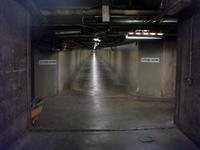
Underground Tunnels of Los Angeles
During prohibition, corrupt (or “fun” depending on how you look at it) city officials ran prohibition dens under the streets of Downtown Los Angeles.
While the rest of the country was forced to go dry, underneath Downtown Los Angeles the party never stopped. Despite prohibition laws, eleven miles of service tunnels became passageways to basement speakeasies with innocuous fronts above ground. Patrons were able to move about under the city, boozing it up without a care in the world, while the Mayor's office ran the supply of hootch.
King Eddy Saloon, an establishment that has been alive and kicking on 5th and Main since the 1900's, hid in plain sight fronting as a piano store - a suspicious business to be in during the depression. Luckily, local officials took no issue with King Eddy's sudden interest in music, and the business not only survived but prospered. Now an official saloon once more, its basement still remains part of the tunnel system, littered with crumbling brick lines and graffiti murals.
Aside from the service tunnels, there are also abandoned subway and equestrian tunnels from the days before personal vehicles began clogging up L.A.'s city streets. There are stories of these tunnels being used by police to transport prisoners, bank security to move large sums of cash safely, and both coroners and mobsters to store bodies. Now they are mostly closed off, but some are still accessible and are used as film locations, easy shortcuts by city employees between buildings, and a place for runners to train on the rare occasion of bad weather.
To explore the former highway of the L.A. Underground, you must slip behind the Hall of Records on Temple St. and locate an easy-to-miss elevator. You’ll be transported down into a subterranean passage filled with mysterious street art, rusted machinery, and iron gates that limit your exploration to areas deemed earthquake safe.
Read more about Underground Tunnels of Los Angeles on Atlas Obscura...
Category: Architectural Oddities, Subterranean Sites
Location:
Edited by: Rachel, Seth Teicher, Dylan
Thu, 23 Feb 2012 22:28:00 -0600
Mabua Pebble Beach
Mabua Pebble Beach
Mabua Pebble BeachA unique beach made of a myriad of multi-sized pebbles. Mabua Pebble Beach, located 30 minutes from the city center of Surigao, is unique among many of the Filipino beaches due to its multitude of smooth white pebbles that make up its shoreline.
While most beaches are formed through the movement of sediment influenced by the wind, waves and currents, Mabua Pebble Beach's unique composition was most likely formed by very strong forward swashing waves that forced the pebble material to be driven onshore, and weaker return swashing waves that caused the material to be deposited.
The countless number of smooth pebbles that make up Mabua Pebble Beach, each varying in different sizes and shapes (although the majority tend to be oval) also serve another, albeit different, purpose. Walking barefoot on the smooth stones, according to reflexologists, has a strong impact on the body, as the feet have reflex points that are connected to our internal organs, making this beach both stunning and therapeutic.Read more about Mabua Pebble Beach on Atlas Obscura...Category: Natural Wonders, Geological OdditiesLocation: Surigao, PhilippinesEdited by: TrevorShawnElia, Rachel
Mabua Pebble Beach
A unique beach made of a myriad of multi-sized pebbles. Mabua Pebble Beach, located 30 minutes from the city center of Surigao, is unique among many of the Filipino beaches due to its multitude of smooth white pebbles that make up its shoreline.
While most beaches are formed through the movement of sediment influenced by the wind, waves and currents, Mabua Pebble Beach's unique composition was most likely formed by very strong forward swashing waves that forced the pebble material to be driven onshore, and weaker return swashing waves that caused the material to be deposited.
The countless number of smooth pebbles that make up Mabua Pebble Beach, each varying in different sizes and shapes (although the majority tend to be oval) also serve another, albeit different, purpose. Walking barefoot on the smooth stones, according to reflexologists, has a strong impact on the body, as the feet have reflex points that are connected to our internal organs, making this beach both stunning and therapeutic.
Read more about Mabua Pebble Beach on Atlas Obscura...
Category: Natural Wonders, Geological Oddities
Location: Surigao, Philippines
Edited by: TrevorShawnElia, Rachel
Thu, 23 Feb 2012 00:00:00 -0600
Mint Museum of Toys
Mint Museum of Toys
Mint Museum of Toys30 years worth of pressed-tin, bakalite, and characters both loved and forgottenMint, known colloquially as the Museum of Toys, sits in downtown Singapore amidst finance buildings of steel, glass and chique clubs. Inside: a collection of over 50,000 toys from 40 countries, spanning most of the 20th century.
You'll see Dan Dare, the Green Lantern, Batman, Mickey Mouse, Robby Robot, and countless other characters and childhood favorites. Most interestingly, some pieces will have estimated value tags-one Popeye character pushing a tin tank is apparently worth $14,000 USD, other tags will tell you if a toy is one of a kind, and if not how many others exist.
It's an interesting museum set inside a modern building, but beware; with a $15 price tag for entry, it's exactly what it claims to be and nothing more, a museum of toys.Read more about Mint Museum of Toys on Atlas Obscura...Category: Museums and Collections, Purveyors of CuriositiesLocation: Singapore, SingaporeEdited by: likethefox, Rachel
Mint Museum of Toys
30 years worth of pressed-tin, bakalite, and characters both loved and forgottenMint, known colloquially as the Museum of Toys, sits in downtown Singapore amidst finance buildings of steel, glass and chique clubs. Inside: a collection of over 50,000 toys from 40 countries, spanning most of the 20th century.
You'll see Dan Dare, the Green Lantern, Batman, Mickey Mouse, Robby Robot, and countless other characters and childhood favorites. Most interestingly, some pieces will have estimated value tags-one Popeye character pushing a tin tank is apparently worth $14,000 USD, other tags will tell you if a toy is one of a kind, and if not how many others exist.
It's an interesting museum set inside a modern building, but beware; with a $15 price tag for entry, it's exactly what it claims to be and nothing more, a museum of toys.
Read more about Mint Museum of Toys on Atlas Obscura...
Category: Museums and Collections, Purveyors of Curiosities
Location: Singapore, Singapore
Edited by: likethefox, Rachel
Wed, 22 Feb 2012 00:45:00 -0600
Athena the Owl at the Florence Nightingale Museum
Athena the Owl at the Florence Nightingale Museum
Athena the Owl at the Florence Nightingale MuseumThe Florence Nightingale Museum is home to the famous nurse's most treasured belonging, her beloved pet owlAt the Parthenon in Athens, Greece in 1850, a tiny owlet fell from its nest and into the hands of wicked children. The tiny bird was spotted by a young woman who, sure it was about to be tortured to death by the rascals, saved the baby bird. It was the bird's extreme luck that young woman happened to be none other than Florence Nightingale, the British nurse whose name is now synonymous with the word “mercy.”
Ms. Nightingale shooed off the offending youths and rescued the poor owlet, who she named Athena after the Greek goddess of war and wisdom. True to her nature, the nurse lovingly cared for Athena, hand-feeding her, training her to bow and curtsy, and tucking her safely in the pocket of her apron. Athena responded with a fierce loyalty. On occasion, a little too fierce. Athena was not fond of people she found intrusive to her human, and often used her impressive beak to peck at those who dared to get within reach.
After 5 years of blissful owl/nurse companionship, war broke out in Crimea and Florence was called on to take her nursing skills into the field. A war zone is no place for a pet, even one as intelligent and devoted as Athena, so Florence arranged for her feathered friend to reside in her attic during her absence. Unfortunately, the tender loving care that had saved Athena's life when she was just a baby was the very thing that ultimately led to her demise. Too domesticated to hunt for herself and devastated by loneliness, Athena perished in the attic when family members failed to check on her.
Florence, who had been busy preparing to leave but had not yet departed, was heartbroken. Not willing to part with her dear friend so quickly, she delayed her trip and found a trusted taxidermist to preserve Athena forever. She kept the feathery shell of her beloved pet mounted in her family home for the rest of her days. When Florence went to join Athena in the great beyond, the owl was displayed in the home of wealthy sister Parthenope, who wrote a book about her with the title, “The Life and Death of Athena an Owlet”.
Later on the owl fell into the care of an elderly care charity by the name Age Care, which also owned “Lea Hurst”, Nightingale's family home. The trust loaned the owl and other artifacts to the Florence Nightingale Museum, and when the items were put up for sale, a community fundraiser effort was successful in making the museum Athena's permanent home.Read more about Athena the Owl at the Florence Nightingale Museum on Atlas Obscura...Category: Fascinating Fauna, Museums and Collections, Unique Collections, Hunting and TaxidermyLocation: London, United KingdomEdited by: Rachel, Annetta, Dylan
Athena the Owl at the Florence Nightingale Museum
The Florence Nightingale Museum is home to the famous nurse's most treasured belonging, her beloved pet owlAt the Parthenon in Athens, Greece in 1850, a tiny owlet fell from its nest and into the hands of wicked children. The tiny bird was spotted by a young woman who, sure it was about to be tortured to death by the rascals, saved the baby bird. It was the bird's extreme luck that young woman happened to be none other than Florence Nightingale, the British nurse whose name is now synonymous with the word “mercy.”
Ms. Nightingale shooed off the offending youths and rescued the poor owlet, who she named Athena after the Greek goddess of war and wisdom. True to her nature, the nurse lovingly cared for Athena, hand-feeding her, training her to bow and curtsy, and tucking her safely in the pocket of her apron. Athena responded with a fierce loyalty. On occasion, a little too fierce. Athena was not fond of people she found intrusive to her human, and often used her impressive beak to peck at those who dared to get within reach.
After 5 years of blissful owl/nurse companionship, war broke out in Crimea and Florence was called on to take her nursing skills into the field. A war zone is no place for a pet, even one as intelligent and devoted as Athena, so Florence arranged for her feathered friend to reside in her attic during her absence. Unfortunately, the tender loving care that had saved Athena's life when she was just a baby was the very thing that ultimately led to her demise. Too domesticated to hunt for herself and devastated by loneliness, Athena perished in the attic when family members failed to check on her.
Florence, who had been busy preparing to leave but had not yet departed, was heartbroken. Not willing to part with her dear friend so quickly, she delayed her trip and found a trusted taxidermist to preserve Athena forever. She kept the feathery shell of her beloved pet mounted in her family home for the rest of her days. When Florence went to join Athena in the great beyond, the owl was displayed in the home of wealthy sister Parthenope, who wrote a book about her with the title, “The Life and Death of Athena an Owlet”.
Later on the owl fell into the care of an elderly care charity by the name Age Care, which also owned “Lea Hurst”, Nightingale's family home. The trust loaned the owl and other artifacts to the Florence Nightingale Museum, and when the items were put up for sale, a community fundraiser effort was successful in making the museum Athena's permanent home.
Read more about Athena the Owl at the Florence Nightingale Museum on Atlas Obscura...
Category: Fascinating Fauna, Museums and Collections, Unique Collections, Hunting and Taxidermy
Location: London, United Kingdom
Edited by: Rachel, Annetta, Dylan
Wed, 22 Feb 2012 00:20:00 -0600
Autry National Center
Autry National Center
Autry National Center Wild west history the Hollywood wayNamed after the the original singing cowboy, the Autry National Center celebrates all things Wild West, and while not as famous as LACMA or the Getty, has held it's own as a significant keeper of intercultural history and art.
The only collection in this region dedicated to Western culture, it's serious undertaking of educating on subjects like exploring equal rights during the Civil War is given levity by installations such as “How the West was Worn by....Michael Jackson”, a look at the pop singers western influenced fashion choices.
With the six permanent exhibition areas designed by Disney's Imagineers, you'll get lost in a Hollywood portrait of the American West, where Spanish missionaries and Clint Eastwood are given equal footing in the story of our rugged beginnings.Read more about Autry National Center on Atlas Obscura...Category: Museums and Collections, Unique Collections, Cultures and Civilizations Location: Edited by: Rachel
Autry National Center
Wild west history the Hollywood wayNamed after the the original singing cowboy, the Autry National Center celebrates all things Wild West, and while not as famous as LACMA or the Getty, has held it's own as a significant keeper of intercultural history and art.
The only collection in this region dedicated to Western culture, it's serious undertaking of educating on subjects like exploring equal rights during the Civil War is given levity by installations such as “How the West was Worn by....Michael Jackson”, a look at the pop singers western influenced fashion choices.
With the six permanent exhibition areas designed by Disney's Imagineers, you'll get lost in a Hollywood portrait of the American West, where Spanish missionaries and Clint Eastwood are given equal footing in the story of our rugged beginnings.
Read more about Autry National Center on Atlas Obscura...
Category: Museums and Collections, Unique Collections, Cultures and Civilizations
Location:
Edited by: Rachel
Tue, 21 Feb 2012 09:30:00 -0600
Site of the Niantic
Site of the Niantic
Site of the NianticGold Rush ship-turned-hotel buried underneath San Francisco's financial districtThe story of the Niantic is that of a ship made rich, abandoned, remade, burned, buried, lost, re-found, and then lost again. It has had a full history.
The Niantic was one of many ships that brought eager gold-seekers from around the world into Yerba Buena Cove (now San Francisco) during the frenzied times of 1848-1849.
Originally a whaling ship, the amount of money to be made ferrying gold hungry hopefuls to Yerba Buena Cove was staggering, and the Niantic made over 38,000 dollars - over a million dollars in today's money - on its single trip bringing gold seekers to California. Upon arrival in Yerba Buena, the aspiring miners would abandon the ships, stock up on supplies, and race out to take their chances panning for gold in the foothills.
The Niantic, however, had an unusual fate. It wasn't just the passengers that were eager to try their luck in the gold game, and on the first day five of the crew deserted, nine more left on the second day, and three more took off on the third. (It may have been about more than just gold, as two of the deserting sailors stabbed their Captain as part of their farewell.)
The ship, left with almost no crew, was simply floated out of the busy bay and purposely run aground near what is now the intersection Clay and Montgomery Streets.
The ship was subsequently converted for use as a store, warehouse, offices, and hotel. Most of the ship burned in several fires starting in 1850, but was each time was rebuilt into a novelty hotel that incorporated the ship's original hull. Above the door cut into the vessels side was the inscription "Rest for the weary and storage for trunks."
The famous hotel stood until 1872 when it burned down, though in the remains the forgotten hull of the ship - with a bunch of champagne inside - was re-discovered in the ruins. The hull was then promptly forgotten again. The hull of the Niantic was then once again "rediscovered" in 1978 during excavation for the Mark Twain Plaza Complex. She still had some champagne left in her hold.
Today a portion of the ship is in the San Francisco maritime museum while a bow remains undisturbed under a parking lot, awaiting a future "rediscovery." The Niantic is only one of over a hundred ships now buried somewhere under San Francisco's shoreline.
In 1919, the Historic Landmarks Committee of the Native Sons of the Golden West put up a plaque to mark the site.Read more about Site of the Niantic on Atlas Obscura...Category: Subterranean SitesLocation: Edited by: rebeccaclara, Dylan, cwhaley1981, Seth Teicher
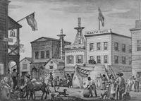
Site of the Niantic
Gold Rush ship-turned-hotel buried underneath San Francisco's financial districtThe story of the Niantic is that of a ship made rich, abandoned, remade, burned, buried, lost, re-found, and then lost again. It has had a full history.
The Niantic was one of many ships that brought eager gold-seekers from around the world into Yerba Buena Cove (now San Francisco) during the frenzied times of 1848-1849.
Originally a whaling ship, the amount of money to be made ferrying gold hungry hopefuls to Yerba Buena Cove was staggering, and the Niantic made over 38,000 dollars - over a million dollars in today's money - on its single trip bringing gold seekers to California. Upon arrival in Yerba Buena, the aspiring miners would abandon the ships, stock up on supplies, and race out to take their chances panning for gold in the foothills.
The Niantic, however, had an unusual fate. It wasn't just the passengers that were eager to try their luck in the gold game, and on the first day five of the crew deserted, nine more left on the second day, and three more took off on the third. (It may have been about more than just gold, as two of the deserting sailors stabbed their Captain as part of their farewell.)
The ship, left with almost no crew, was simply floated out of the busy bay and purposely run aground near what is now the intersection Clay and Montgomery Streets.
The ship was subsequently converted for use as a store, warehouse, offices, and hotel. Most of the ship burned in several fires starting in 1850, but was each time was rebuilt into a novelty hotel that incorporated the ship's original hull. Above the door cut into the vessels side was the inscription "Rest for the weary and storage for trunks."
The famous hotel stood until 1872 when it burned down, though in the remains the forgotten hull of the ship - with a bunch of champagne inside - was re-discovered in the ruins. The hull was then promptly forgotten again. The hull of the Niantic was then once again "rediscovered" in 1978 during excavation for the Mark Twain Plaza Complex. She still had some champagne left in her hold.
Today a portion of the ship is in the San Francisco maritime museum while a bow remains undisturbed under a parking lot, awaiting a future "rediscovery." The Niantic is only one of over a hundred ships now buried somewhere under San Francisco's shoreline.
In 1919, the Historic Landmarks Committee of the Native Sons of the Golden West put up a plaque to mark the site.
Read more about Site of the Niantic on Atlas Obscura...
Category: Subterranean Sites
Location:
Edited by: rebeccaclara, Dylan, cwhaley1981, Seth Teicher
Tue, 21 Feb 2012 00:00:00 -0600
Poveglia
Poveglia
PovegliaA small island less than half a mile from Venice is a forbidden island with a dark and twisted past. Poveglia was built on a permanent fortification built by the Venitian government, and was used as a place of quarantine for plague victims from the three major waves of the Black Death. A successful lazaretto, the island is said to have over 160,000 infected souls live out their final days and hours there -- so many that there are whispers that 50% of the soil consists of human remains. Recently, mass graves have been found on Poveglia containing the remains of thousands of plague victims.
Finding the location to be small and easily missed, Napoleon also used the island for a darker purpose, and stored weapons there. The location was discovered, and many small battles took place as the island claimed even more lives.
In 1922, a mental hospital was opened on Poveglia. Legend says that one doctor at the hospital tortured and killed many of his patients, butchering them horribly only to later die by falling from (or possibly being thrown off of) the bell tower. The ruins of the hospital are still there, and while it is professed to be a former retirement home, evidence that it housed mental patients is still evident.
With a past like this, it's not surprising that Poveglia is believed to be haunted, attracting the attention of ghost hunters and paranormal investigators.
Poveglia is strictly off-limits to visitors.Read more about Poveglia on Atlas Obscura...Category: Anomalous Islands, Memento Mori, Incredible RuinsLocation: Lido, ItalyEdited by: jakes, Rachel, Seth Teicher
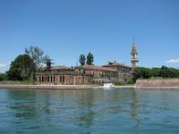
Poveglia
A small island less than half a mile from Venice is a forbidden island with a dark and twisted past. Poveglia was built on a permanent fortification built by the Venitian government, and was used as a place of quarantine for plague victims from the three major waves of the Black Death. A successful lazaretto, the island is said to have over 160,000 infected souls live out their final days and hours there -- so many that there are whispers that 50% of the soil consists of human remains. Recently, mass graves have been found on Poveglia containing the remains of thousands of plague victims.
Finding the location to be small and easily missed, Napoleon also used the island for a darker purpose, and stored weapons there. The location was discovered, and many small battles took place as the island claimed even more lives.
In 1922, a mental hospital was opened on Poveglia. Legend says that one doctor at the hospital tortured and killed many of his patients, butchering them horribly only to later die by falling from (or possibly being thrown off of) the bell tower. The ruins of the hospital are still there, and while it is professed to be a former retirement home, evidence that it housed mental patients is still evident.
With a past like this, it's not surprising that Poveglia is believed to be haunted, attracting the attention of ghost hunters and paranormal investigators.
Poveglia is strictly off-limits to visitors.
Read more about Poveglia on Atlas Obscura...
Category: Anomalous Islands, Memento Mori, Incredible Ruins
Location: Lido, Italy
Edited by: jakes, Rachel, Seth Teicher
Mon, 20 Feb 2012 16:14:00 -0600
Thinker's Lodge in Pugwash, Nova Scotia
Thinker's Lodge in Pugwash, Nova Scotia
Thinker's Lodge in Pugwash, Nova ScotiaA rustic house where intellectuals and investors tried to put an end to Cold War nuclear armament Cyrus Eaton, a famed investor and philanthropist of the early 20th century, made his money as a powerful financier in the American Midwest. However, he hailed from the humble beginnings of Pugwash, a tiny fishing community on the Northern shore of Nova Scotia.
Known for his charitable and progressive attitude, it was no surprise that he readily offered his old home in Pugwash to a burgeoning alliance of intellectuals and scientists. Their simple goal; to ease the tightening detente of the Cold War in the 1950's and onward, and for good measure, nuclear disarmament. This group was affiliated with the famous Russell-Einstein Manifesto -- a groundbreaking petition co-authored by the philosopher Bertrand Russell and the eminent freethinking scientist Albert Einstein -- and was actually co-founded by Bertrand Russell himself.
It was to Cyrus Eaton's humble family abode on the North Shore that this group went to seek reconciliation and had a brainstorming session on one of the most threatening problems facing mankind. The initial meeting had various countries and ideologies present; 7 American, 3 Soviet, 3 Japanese, 3 British, 2 Canadian, an Australian, an Austrian, a Chinese, a French, and finally a Polish scientist. Amongst the scientists were also Eaton himself, and a small smattering of other power holders. After the small session in Nova Scotia, an organization was founded called "The Pugwash Conferences on Science and World Affairs."
The aforementioned organization, in present day, has this impressive list of accomplishments: the Nobel Peace Prize (1995), as well as claims of influence on the Partial Test Ban Treaty (1963), the Non-Proliferation Treaty (1968), the Anti-Ballistic Missile Treaty (1972), the Biological Weapons Convention (1972), and the Chemical Weapons Convention (1993). It's hard to believe that ideas spread in a tiny house in a small town could have such international relevance!
*The Cyrus Eaton House, known as "Thinker's Lodge," has been preserved and still sits in Pugwash, Nova Scotia. There is a small museum and conference space inside.Read more about Thinker's Lodge in Pugwash, Nova Scotia on Atlas Obscura...Category: Repositories of KnowledgeLocation: Edited by: likethefox, Dylan
Thinker's Lodge in Pugwash, Nova Scotia
A rustic house where intellectuals and investors tried to put an end to Cold War nuclear armament Cyrus Eaton, a famed investor and philanthropist of the early 20th century, made his money as a powerful financier in the American Midwest. However, he hailed from the humble beginnings of Pugwash, a tiny fishing community on the Northern shore of Nova Scotia.
Known for his charitable and progressive attitude, it was no surprise that he readily offered his old home in Pugwash to a burgeoning alliance of intellectuals and scientists. Their simple goal; to ease the tightening detente of the Cold War in the 1950's and onward, and for good measure, nuclear disarmament. This group was affiliated with the famous Russell-Einstein Manifesto -- a groundbreaking petition co-authored by the philosopher Bertrand Russell and the eminent freethinking scientist Albert Einstein -- and was actually co-founded by Bertrand Russell himself.
It was to Cyrus Eaton's humble family abode on the North Shore that this group went to seek reconciliation and had a brainstorming session on one of the most threatening problems facing mankind. The initial meeting had various countries and ideologies present; 7 American, 3 Soviet, 3 Japanese, 3 British, 2 Canadian, an Australian, an Austrian, a Chinese, a French, and finally a Polish scientist. Amongst the scientists were also Eaton himself, and a small smattering of other power holders. After the small session in Nova Scotia, an organization was founded called "The Pugwash Conferences on Science and World Affairs."
The aforementioned organization, in present day, has this impressive list of accomplishments: the Nobel Peace Prize (1995), as well as claims of influence on the Partial Test Ban Treaty (1963), the Non-Proliferation Treaty (1968), the Anti-Ballistic Missile Treaty (1972), the Biological Weapons Convention (1972), and the Chemical Weapons Convention (1993). It's hard to believe that ideas spread in a tiny house in a small town could have such international relevance!
*The Cyrus Eaton House, known as "Thinker's Lodge," has been preserved and still sits in Pugwash, Nova Scotia. There is a small museum and conference space inside.
Read more about Thinker's Lodge in Pugwash, Nova Scotia on Atlas Obscura...
Category: Repositories of Knowledge
Location:
Edited by: likethefox, Dylan
Sun, 19 Feb 2012 22:48:00 -0600
Shelburne Farms
Shelburne Farms
Shelburne FarmsA massive sustainable farm designed by the mastermind behind Central ParkFifteen minutes outside of Burlington, Vermont, nestled between Lake Champlain and Route 89 lies Shelburne Farms, a place far worthier of a visit than the average roadside rural destination. Built by Dr. Seward Webb and Lila Vanderbilt Webb (yes, one of those Vanderbilts) in 1886, the once lavish summer home has evolved into a fully sustainable, non-for-profit teaching farm populated by Brown Swiss cows, piglets, and baby goats.
While the farm’s inn is as beautiful and bed-and-breakfasty as can be, what makes Shelburne a truly worthwhile destination is its grounds: 1,400 acres of stunning farmland, with twisting trails that were designed by Frederick Law Olmsted, the landscape architect most famous for designing Central Park. Tour guides claim that Olmsted designed Shelburne’s grounds with the intentions of surprising visitors at every turn and invoking a sense of wonder and mystique as they traveled around the farm. He seems to have accomplished his mission, as the farm’s terrain shifts from rolling hills and picturesque pastures to sandy shores and dense forests at every bend.
The Inn at Shelburne Farms is closed from October to March due to a lack of heating- during World War II the entire inn (including the furnace) was stripped of its metal for the war effort. The inn is also rumored to be haunted by the late Mrs. Webb, so plan any overnight trips accordingly.
If you somehow manage to get burnt out on petting cows, tasting (award-winning) cheese, and wandering around the miles of walking trails, you can just kick back in the inn’s gardens and look out over the water. Hopefully you’ll get lucky, and spot Champ- Lake Champlain’s very own version of Nessie- popping his head out of the water.Read more about Shelburne Farms on Atlas Obscura...Category: Natural Wonders, Architectural OdditiesLocation: Edited by: MichaeltheMagic, Dylan
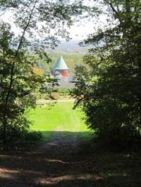
Shelburne Farms
A massive sustainable farm designed by the mastermind behind Central ParkFifteen minutes outside of Burlington, Vermont, nestled between Lake Champlain and Route 89 lies Shelburne Farms, a place far worthier of a visit than the average roadside rural destination. Built by Dr. Seward Webb and Lila Vanderbilt Webb (yes, one of those Vanderbilts) in 1886, the once lavish summer home has evolved into a fully sustainable, non-for-profit teaching farm populated by Brown Swiss cows, piglets, and baby goats.
While the farm’s inn is as beautiful and bed-and-breakfasty as can be, what makes Shelburne a truly worthwhile destination is its grounds: 1,400 acres of stunning farmland, with twisting trails that were designed by Frederick Law Olmsted, the landscape architect most famous for designing Central Park. Tour guides claim that Olmsted designed Shelburne’s grounds with the intentions of surprising visitors at every turn and invoking a sense of wonder and mystique as they traveled around the farm. He seems to have accomplished his mission, as the farm’s terrain shifts from rolling hills and picturesque pastures to sandy shores and dense forests at every bend.
The Inn at Shelburne Farms is closed from October to March due to a lack of heating- during World War II the entire inn (including the furnace) was stripped of its metal for the war effort. The inn is also rumored to be haunted by the late Mrs. Webb, so plan any overnight trips accordingly.
If you somehow manage to get burnt out on petting cows, tasting (award-winning) cheese, and wandering around the miles of walking trails, you can just kick back in the inn’s gardens and look out over the water. Hopefully you’ll get lucky, and spot Champ- Lake Champlain’s very own version of Nessie- popping his head out of the water.
Read more about Shelburne Farms on Atlas Obscura...
Category: Natural Wonders, Architectural Oddities
Location:
Edited by: MichaeltheMagic, Dylan
Fri, 17 Feb 2012 14:42:00 -0600
Nightingale-Olympic
Nightingale-Olympic
Nightingale-OlympicTime-Frozen Department Store of Dangerous and Dusty RelicsThe tube socks and termite acne suffered by the mannequins at Nightingale-Olympic suggest a particular era, but you'll be lost in their million yard gaze before you can calculate just when that might be.
Go ahead inside and, well... shop? Poke around, but is any of it for sale? The curving sweep of the grand staircase brings you to the fitness, taxidermy, and music "departments."
Behold minute individual differences in the array of fat melting belt vibrators, lathe machines, electric guitars, xylophones, mysterious lock boxes, lawn chairs and free weight bench press still in plastic.
Don't linger too long, the beauty parlor, automated leg gyrator, and still more time-frozen curios await you upstairs.Read more about Nightingale-Olympic on Atlas Obscura...Category: Unique Collections, Commercial Curiosities, Purveyors of CuriositiesLocation: Bangkok, ThailandEdited by: pilastr, Rachel
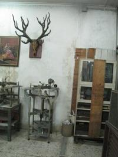
Nightingale-Olympic
Time-Frozen Department Store of Dangerous and Dusty RelicsThe tube socks and termite acne suffered by the mannequins at Nightingale-Olympic suggest a particular era, but you'll be lost in their million yard gaze before you can calculate just when that might be.
Go ahead inside and, well... shop? Poke around, but is any of it for sale? The curving sweep of the grand staircase brings you to the fitness, taxidermy, and music "departments."
Behold minute individual differences in the array of fat melting belt vibrators, lathe machines, electric guitars, xylophones, mysterious lock boxes, lawn chairs and free weight bench press still in plastic.
Don't linger too long, the beauty parlor, automated leg gyrator, and still more time-frozen curios await you upstairs.
Read more about Nightingale-Olympic on Atlas Obscura...
Category: Unique Collections, Commercial Curiosities, Purveyors of Curiosities
Location: Bangkok, Thailand
Edited by: pilastr, Rachel
Fri, 17 Feb 2012 10:30:00 -0600
Meserole Theatre
Meserole Theatre
Meserole TheatreHistoric Greenpoint theater housing a generic pharmacyThe Meserole was a silent movie house opened in 1921. It was named after one of the original farming families that settled Greenpoint in the 1700s. Unfortunately, that pioneering spirit has disappeared, as it is now home to a Rite Aid pharmacy.
After being bought by United Artists, the theater modernized and switched to talkies. This lasted until the 1980s, when it made another fashionable transformation: roller disco. As the fad died out, the space became a 99-cent store, then an Eckard Drug, finally being bought out by Rite Aid.
Luckily, the pharmacy chain left much of theatre’s layout intact. The exterior was left untouched, except for the clashing Rite Aid sign affixed to it. Inside, there is a huge centrally-located white dome that holds a disco ball from its boogie oogie oogie days. Elsewhere there are elaborately detailed arches and moldings that have been whitewashed as well.
The theater might be resuscitated in 2014, when the pharmacy’s lease is up. Landlord, Geoffrey Bailey, has put it out there that if Rite Aid does not renew its lease, it would be nice to have the Meserole returned to its former glory.Read more about Meserole Theatre on Atlas Obscura...Category: Architectural OdditiesLocation: Edited by: HJHausman, Rachel
Meserole Theatre
Historic Greenpoint theater housing a generic pharmacyThe Meserole was a silent movie house opened in 1921. It was named after one of the original farming families that settled Greenpoint in the 1700s. Unfortunately, that pioneering spirit has disappeared, as it is now home to a Rite Aid pharmacy.
After being bought by United Artists, the theater modernized and switched to talkies. This lasted until the 1980s, when it made another fashionable transformation: roller disco. As the fad died out, the space became a 99-cent store, then an Eckard Drug, finally being bought out by Rite Aid.
Luckily, the pharmacy chain left much of theatre’s layout intact. The exterior was left untouched, except for the clashing Rite Aid sign affixed to it. Inside, there is a huge centrally-located white dome that holds a disco ball from its boogie oogie oogie days. Elsewhere there are elaborately detailed arches and moldings that have been whitewashed as well.
The theater might be resuscitated in 2014, when the pharmacy’s lease is up. Landlord, Geoffrey Bailey, has put it out there that if Rite Aid does not renew its lease, it would be nice to have the Meserole returned to its former glory.
Read more about Meserole Theatre on Atlas Obscura...
Category: Architectural Oddities
Location:
Edited by: HJHausman, Rachel
Thu, 16 Feb 2012 00:01:00 -0600
The National Toy Hall of Fame
The National Toy Hall of Fame
The National Toy Hall of Fame A collection of the best toys ever made, The National Toy Hall of Fame is filled with kids, fun, and for some reason, a bird preserve.What do GI Joes, Duncan Yo-Yos, and sticks have in common? Answer: They have all been inducted into the National Toy Hall of Fame!
Located on the top floor of the Strong Museum of Play in Rochester, New York, it's a great place to bring kids and enjoy your own youth, as well, but be forewarned: As it's at the Museum of Play, the whole museum doubles as a children's play area. It's nosy and there's a constant threat of a child running into you.
Established in 1998, it's original home was in Salem, Oregon before moving to Rochester and the Museum of Play in 2002. Since 1998, 49 toys have been inducted into the Hall of Fame.
The first class included 17 toys: Barbie, Crayola Crayon, Erector Set, Etch-A-Sketch, Frisbee, Hula Hoop, Legos, Lincoln Logs, Marbles, Monopoly, Play-Doh, Radio Flyer wagon, Roller Skates, Teddy Bear, Tinkertoys, View-master, Duncan Yo-Yo. In 2011, the inductees were the dollhouse, Hot Wheels, and the blanket.
If you think your favorite toy is missing from the hall of fame, you can nominate it and it will be considered for next year's class! Nominated toys are selected on the basis of criteria, which includes icon-status, longevity, discovery, and innovation. Inductions are held every November, so get your entries in early!
In addition to the National Toy Hall of Fame, the Museum of Play also houses an awesome retrospective video game exhibit, a bird perserve, and an old diner. A great day trip!Read more about The National Toy Hall of Fame on Atlas Obscura...Category: Museums and Collections, Unique CollectionsLocation: Edited by: OrangeRavens, Rachel
The National Toy Hall of Fame
A collection of the best toys ever made, The National Toy Hall of Fame is filled with kids, fun, and for some reason, a bird preserve.What do GI Joes, Duncan Yo-Yos, and sticks have in common? Answer: They have all been inducted into the National Toy Hall of Fame!
Located on the top floor of the Strong Museum of Play in Rochester, New York, it's a great place to bring kids and enjoy your own youth, as well, but be forewarned: As it's at the Museum of Play, the whole museum doubles as a children's play area. It's nosy and there's a constant threat of a child running into you.
Established in 1998, it's original home was in Salem, Oregon before moving to Rochester and the Museum of Play in 2002. Since 1998, 49 toys have been inducted into the Hall of Fame.
The first class included 17 toys: Barbie, Crayola Crayon, Erector Set, Etch-A-Sketch, Frisbee, Hula Hoop, Legos, Lincoln Logs, Marbles, Monopoly, Play-Doh, Radio Flyer wagon, Roller Skates, Teddy Bear, Tinkertoys, View-master, Duncan Yo-Yo. In 2011, the inductees were the dollhouse, Hot Wheels, and the blanket.
If you think your favorite toy is missing from the hall of fame, you can nominate it and it will be considered for next year's class! Nominated toys are selected on the basis of criteria, which includes icon-status, longevity, discovery, and innovation. Inductions are held every November, so get your entries in early!
In addition to the National Toy Hall of Fame, the Museum of Play also houses an awesome retrospective video game exhibit, a bird perserve, and an old diner. A great day trip!
Read more about The National Toy Hall of Fame on Atlas Obscura...
Category: Museums and Collections, Unique Collections
Location:
Edited by: OrangeRavens, Rachel